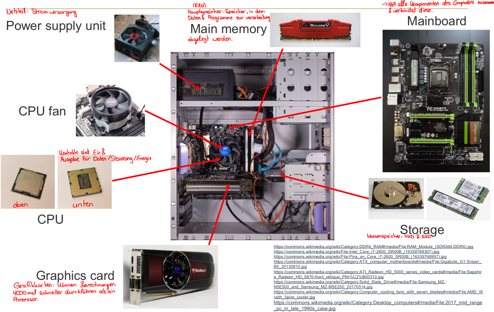
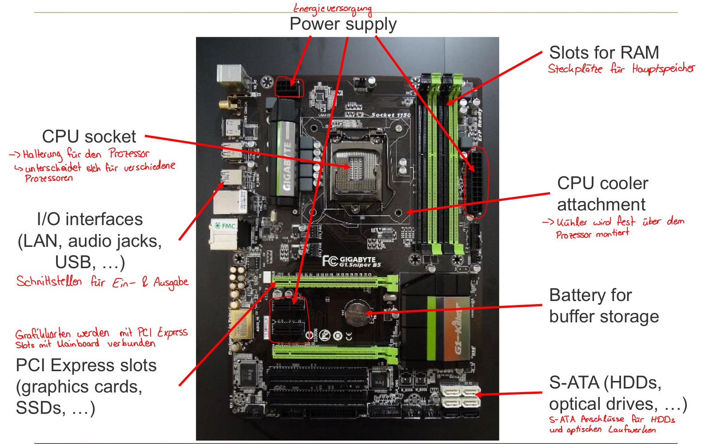
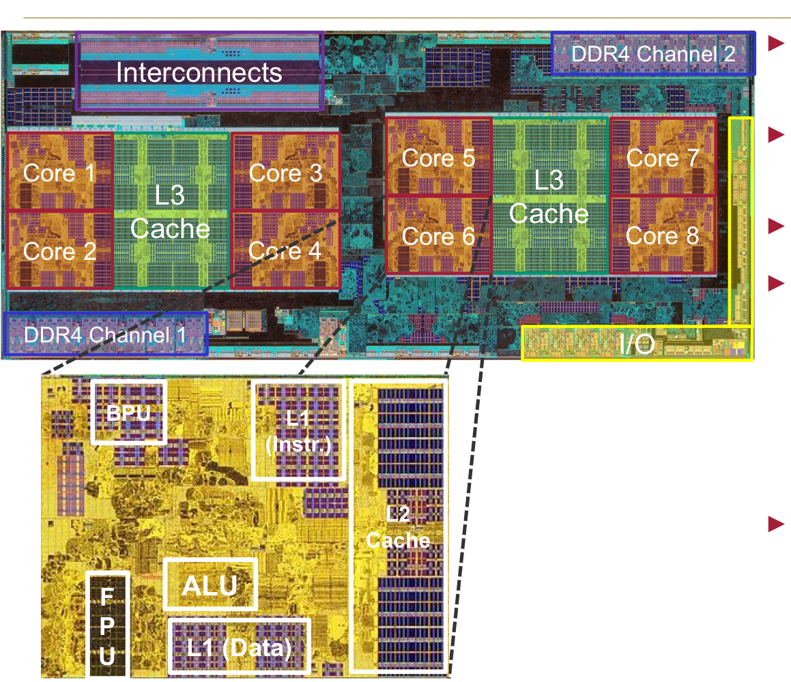

<div class="block">
  <div class="container site-border">
    <h2>Interpreter vs Compiler</h2>
    <p>Interpreter übersetzen bei der Ausführung.</p>
    <p>
      Compiler übersetzen vor der Ausführung. Sie übersetzen Programme in
      Anweisungen, die die Hardware ausführen kann.
    </p>
    <p>
      HTML wird vom Browser geparst und in eine DOM Struktur umgewandelt. CSS
      wird vom Browser geparst und in eine CSSOM Struktur umgewandelt und auf
      DOM angewendet.
    </p>
    <h2>Betriebssystem</h2>
    <p>
      Ist ein Überwachungsprogramm, welches das Benutzerprogramm mit der
      Hardware verbindet.
    </p>
    <h2>Zeichensätze</h2>
    <h3>ASCII (American Standard Code for Information Interchange)</h3>
    <p>128 Zeichen, benutzt 7 bits</p>

    <h3>ISO / IEC 8859 Standard</h3>
    <p>
      stellt 15 Zeichensätze zur Verfügung und unterstützt alle europäischen
      Sprachen. Erweiterung von ASCII auf 8 bits
    </p>

    <h3>Unicode</h3>
    <p>
      enthält für alle sinnvollen Schriftzeichen / Textelemente einen digitalen
      Code
    </p>

    <h3>USC Transformation Format (UTF)</h3>
    <p>Repräsentiert alle Unicode Zeichen. Variable Längenkodierung.</p>
    <h2>Die Komponenten eines Computers</h2>
    <ul>
      <li>Eingang (Input)</li>
      <li>Ausgang (Output)</li>
      <li>Memory (Hauptspeicher)</li>
      <li>Datenpfad (Rechenwerk)</li>
      <li>Steuerung (Steuerwerk)</li>
    </ul>
    
    <h3>Aufbau eines Mainboards</h3>
    

    <h3>Prozessoransicht AMD Rison 7000x</h3>
    
    <p>
      Der AMD Rison 7000x hat 8 Kerne in 2 Core Komplexe (Core 1-4 und Core
      5-8). Dazu gibt es 3 Level von Caches (L1, L2 pro Core). Diese beiden sind
      deutlich schneller als normale Arbeitsspeicher. L3 sind etwas langsamer,
      aber dafür größer als L1, L2 Cache.
    </p>
    <h2>Maschinentaktrate</h2>
    <p>
      Die Maschinentaktrate ist eine grundlegende Größe bei der Schaltung.
      Maschinen laufen in Taktzyklen. Dabei ist 1 Hz = 1 Schwingung pro Sekunde,
      also eine Periode wird in 1sek abgearbeitet. 1GHz ist dabei 1.000.000.000
      Schwingungen pro Sekunde.
    </p>
    <p>
      Eine Hohe Taktrate führt zu hoher Temperatur, daher wird entweder die
      Anzahl der Kerne pro Chip bei jeder Generation erhöht oder eine dynamische
      Taktrate, bei der bei hoher Temperatur die Taktrate gesenkt wird.
    </p>

    <h2>JSON</h2>
    <p>
      JavaScript Object Notation ist eine Notation für Objektliterale.
      Ungeordneter Container von key-value Paaren.
    </p>
    <h2>Asynchronous JavaScript and XML (AJAX):</h2>
    <p>
      AJAX ermöglicht es, Daten asynchron vom Server zu laden, ohne die Seite
      neu zu laden. Dies verbessert die Benutzererfahrung durch dynamische
      Inhalte.
    </p>
    <!-- Änderung für git reset -->
    <p>Wird gesteuert über JavaScript Objekt XMLHttpRequest</p>

    <h2>Klassifikation von Kommunikationssystemen</h2>
    
    <p></p>
    <h2>Websockets</h2>
    <p>
      Für Echtzeitübertragungen wie Chats, Live-Updates, Multiplayer Games,
      Börsenkurse. Diese sind bidirektional, asynchron und dauerhaft offen.
    </p>
    <h2>YAML (YAML Ain't Markup Language)</h2>
    <p>
      Ist ein menschenlesbares Datenformat, welches für Konfigurationen gedacht
      ist als Altenative für JSON. Die Einrückung spielt hier eine zentrale
      Rolle:
    </p>
    <pre>
      parent: 
        child1: value
    </pre>
    <h2>Husky</h2>
    <p>
      Husky ist ein Tool, welches Git Hooks für ein Projekt definiert, die vor
      dem Commit ausgeführt werden. Damit kann zB ein Linter vorher ausgeführt
      werden. Husky führt Skripte zu bestimmten Git Zeitpunkten aus zB vor
      commit (pre-commit), beim commit (commit-msg), vor push (pre-push)
    </p>

    <h2>Dateirechtesystem</h2>
    
    <p>
      Der erste Buchstabe der Ausgabe des Befehls ls -l zeigt die Dateitypen an.
      d bedeutet Directory, also Verzeichnis. - bedeutet es handelt sich um eine
      reguläre Datei.
    </p>
    <p>
      Alle Dateien und Ordner in einem Linux System besitzen eine Angabe über
      die Zugriffsrechte. Rechte beziehen sich immer auf Eigentümer, Gruppe,
      Rest der Welt. Für diese drei Gruppen existiert eine Angabe ob die Datei
      lesbar (r = readable), beschreibbar (w = writeable) und (x = executeable)
      ist.
    </p>
    <p>
      Beispiel 2 Zeile: Die Datei "datei" ist eine reguläre Datei, gehört dem
      User conbart, der sie lesen und ändern darf (r w -). Sie gehört der Gruppe
      user, die sie nur lesen dürfen (r - -) und der Rest der Welt darf sie
      lesen (r - -).
    </p>
    <p>Jede Datei hat einen Besitzer (Spalte 3) und eine Gruppe (Spalte 4)</p>

    
    <p>
      Rechte können durch drei Oktalwerte dargestellt werden. Dabei bedeutet
      alle Rechte 2^2 + 2^1 + 2^0 = 7. Für Dateien ist hier 644 der Standard.
      Für Verzeichnisse 755. Bei Verzeichnissen bedeutet das r, das Verzeichnis
      aufzulisten. w erlaubt, Dateien im Verzeichnis anzulegen und zu löschen. x
      erlaubt das Verzeichnis zu durchqueren und auf Einträge darin zuzugreifen,
      sofern weitere Rechte das erlauben.
    </p>
    <h3>Dateirechte verändern:</h3>
    <p>chmod [dateirechte] [files]</p>
    <p>
      chmod steht für change mode und ändert Zugriffsrechte von Dateien und
      Verzeichnissen. Die Option -R steht für recursive und kann verwendet
      werden, um Rechte rekursiv zu ändern.
    </p>
    
    <p>[ugoa] + | - | = [rwx], ...</p>
    <p>
      Das führende Zeichen steht für die Kategorie (user, group, other, all)
    </p>
    <p>
      +, -, = gibt an ob das Recht hinzugefügt, abgezogen oder absolut gesetzt
      werden soll
    </p>
    <p>Dann folgen die Rechte rwx (read, write, executable)</p>
    <p>Mehrere Modi können dabei durch Komma getrennt werden.</p>

    
    <p>
      Der User darf nun ausführen, die Group darf lesen und schreiben und others
      dürfen lesen in Bezug auf die Datei "datei 3"
    </p>

    <h3>Dateiowner verändern</h3>
    <p>chown [neu] datei.txt, damit der Dateiowner verändert wird.</p>

    <h3>Dateigruppe verändern</h3>
    <p>chgrp [neu] datei.txt, damit die Gruppe verändert wird.</p>
    <h2>Template Projekt aufbauen</h2>
    <p>Zu einem professionellen Projekt gehören:</p>
    <ul>
      <li>Vite</li>
      <li>Git</li>
      <li>Husky</li>
      <li>ESLint</li>
      <li>Prettier</li>
      <li>JS / TS</li>
      <li>DDEV</li>
      <li>GitGraph</li>
    </ul>
    <h2>Vite</h2>
    <p>
      Vite ist ein modernes Build-Tool, das schnelle Entwicklungsserver und
      optimierte Produktions-Builds bietet. Es nutzt native ES-Module im Browser
      für eine schnellere Entwicklungserfahrung.
    </p>
    <h3>Vite Dev Modus (lokal)</h3>
    <p>
      Im Entwicklungsmodus startet Vite einen lokalen Entwicklungsserver, der
      Hot Module Replacement (HMR) aktiviert. Dadurch werden ES-Module direkt im
      Browser geladen, ohne ein bundling dafür zu benötigen. ES-Module
      (ECMAScript Modules)sind das standardisierte Modulsystem von JavaScript.
      Der Browser erkennt ES Module anhand von type="module". ES Module besitzen
      auch immer import / export Statements, damit sie als Module erkannt
      werden. Eine main.ts ist dabei immer der Einstiegspunkt für den Browser.
      Diese wird auch als ES Modul geladen, darin liegen aber alle weiteren
      Module, die ebenso ES Module sind. Zusammen bildet sind dann ein
      Modulnetzwerk
    </p>

    <h3>Vite Build Modus</h3>
    <p>Sobald vite build ausgeführt wird, passieren folgende Dinge:</p>
    <ol>
      <li>
        JavaScript Code wird gebündelt, die ES Module werden zusammengeführt,
        ungenützter Code wird entfernt, und die Dateien werden für die
        Produktion optimiert
      </li>
      <li>
        TypeScript wird zu JavaScript kompiliert und gebündelt. Generell landen
        alle JavaScript chunks, css, bilder und fonts immer in /dist/assets/
      </li>
      <li>
        SCSS wird zu CSS kompiliert und gebündelt, minifiziert und evtl. in JS
        eingebettet.
      </li>
      <li>
        HTML wird als Entry File anaysiert, Assets bekommen hashing und imports
        werden korrekt auf gebundelte Dateien umgeleitet.
      </li>
    </ol>

    <h3>Wie erkenne ich Vite?</h3>
    <p>
      In der package.json stehen unter scripts die verwendeten Befehle. Darunter
      wäre dann auch "build": "vite build"
    </p>

    <h2>Staging Server</h2>
    <h3>rsync.sh bei Bosch Sensortec</h3>
    <p>Hier läuft local -> build -> rsync -> preview server</p>
    <p>
      Vite baut deine App. rsync schiebt sie auf einen Server. Staging ist der
      Server dazwischen.
    </p>
    <p>REMOTE_SERVER=ssh-123456-dev@sternundhuber.com ist der Zielserver.</p>
    <p>REMOTE_PATH=www_preview ist der Zielordner auf dem Server.</p>
    <p>DIRECTORY=dist/ ist der lokale Build Ordner</p>
    <p>URL=https://preview.nou-digital-workbench.de/ ist die URL zur Preview</p>

    <h2>Dateistruktur</h2>
    <h3>public</h3>
    <p>
      Dieser Ordner enthält statische Dateien, die unverändert ins
      Build-Verzeichnis kopiert werden. Beispiele: statische html Seiten,
      Bilder, Fonts, favicon, robots.txt usw. Dateien hier kannst du direkt über
      /dateiname im Browser aufrufen.
    </p>
    <h3>src</h3>
    <p>
      Hier kommt dein kompletter Quellcode rein: Komponenten, Styles, Utils,
      etc. assets/: Bilder, Icons oder kleine Dateien, die importiert werden.
      components/: React- oder Vue-Komponenten. main.tsx / main.ts: Startpunkt
      der App, z. B. ReactDOM.render(<App />, document.getElementById('root')).
      App.tsx / App.vue: Hauptkomponente deiner Anwendung.
    </p>
    <h3>vite.config.js</h3>
    <p>
      Die Konfigurationsdatei für Vite. Hier kannst du z. B.: Aliase definieren
      (@/components → src/components) Plugins hinzufügen (z. B. für
      TypeScript-Checking, React, Vue, PWA) Build-Optionen ändern
      (Output-Verzeichnis, Minifizierung, etc.). Sobald vite ausgeführt wird,
      wird diese Datei namens vite.config.js automatisch geladen im Projektroot.
    </p>
    <p>
      Intern benutzt Vite den Rollup Production Bundler. Sobald vite build
      ausgeführt wird, nutzt Vite intern Rollup, um Module zusammenzuführen,
      Tree Shaking (ungenutzten Code entfernen) und code zu splitten. Daher der
      name der rollupOptions in der Vite Konfiguration.
    </p>
    <p>
      Es ist letzlich die komplette Steuerkonsole für dein Build und Dev Setup.
    </p>
    <h4>Imports</h4>
    <pre>import { defineConfig } from 'vite';</pre>
    <p>
      Hilfsfunktionen für die Vite Konfiguration zB bessere
      Autovervollständigung, Typsicherheit und klarere Struktur.
    </p>
    <pre>import { resolve } from 'path';</pre>
    <p>
      Node.js Funktion zum sicheren Erstellen von Pfaden. zB resolve(__dirname,
      'src') ergibt den absolut sicheren Pfad zu /project/src
    </p>
    <pre>import autoprefixer from 'autoprefixer';</pre>
    <p>
      Ist ein PostCSS-Plugin und fügt automatisch Vendor-Prefixes hinzu. zB
      display: flex; wird zu display: -webkit-flex; display: flex; Das ist
      wichtig für Browser Kompatibilität.
    </p>
    <pre>import injectHTML from 'vite-plugin-html-inject';</pre>
    <p>
      Plugin für Vite, welches HTML-Inhalte dynamisch in andere HTML-Dateien
      einfügt. Ähnlich zu includes in PHP.
    </p>

    <pre>import removeConsole from 'vite-plugin-remove-console';</pre>
    <p>
      entfernt automatisch console.log Aufrufe aus dem Produktionscode und sorgt
      für sauberen, performanten Output.
    </p>

    <h4>Projektpfade</h4>
    <pre>const rootDir = resolve(__dirname, 'src');</pre>
    <pre>const outDir = resolve(__dirname, 'dist');</pre>
    <p>rootDir: Quellcode liegt in /src und outDir: Build landet in /dist</p>

    <h4>Export der Konfiguration (Vite Konfiguration)</h4>
    <pre>export default defineConfig({})</pre>
    <p>Hier beginnt die eigentliche Konfiguration von Vite</p>
    <pre>base: './'</pre>
    <p>
      Das ist der Basispfad für das Build-Verzeichnis. Bedeutet letzlich
      http://localhost:5173/ auf dev und http://example.com/ auf production (je
      nachdem was der Webserver oder hosting als domain erstellt).
    </p>
    <p>
      Das build Ergebnis ist dann
      <script src="/assets/index.js"></script>
      und funktioniert auf http://example.com. base: '/app/' wäre dagegen
      <script src="/app/assets/index.js"></script>
    </p>
    und würde auf http://example.com/app/ laufen.
    <pre>root: rootDir,</pre>
    <p>src ist das Root-Verzeichnis für den Quellcode</p>
    <pre>publicDir: resolve(__dirname, 'public'),</pre>
    <p>
      Bestimmt Verzeichnis zur Bereitstellung von einfachen statischen Assets.
      alles aus public/ wird unverändert ins Build Verzeichnis kopiert. Landet
      alles unverändert in /dist bzw outDir. __dirname ist dabei der Ordner,
      indem die Datei liegt, in der __dirname verwendet wird.
    </p>
    <pre>plugins:[removeConsole(), includeHtmlPartials()],</pre>
    <p>
      Array zur Verwendung von Plugins: bei einem Build werden Debug Ausgaben
      entfernt und HTML Teilvorlagen eingefügt.
    </p>
    <pre>
server: { port: 5050, open: true, watch: { './html/**/*.html': true, }, },</pre
    >
    <p>
      Server-Konfigurationen. Läuft auf http://localhost:5050, öffnet
      automatisch den Browser. Alle Dateien unter html/ werden überwacht.
    </p>
    <pre>
css: { postcss: { sourceMap: false, plugins: [autoprefixer], }, preprocessorOptions: { scss: { api: 'modern-compiler',}, }, },</pre
    >
    <p>
      CSS Konfigurationen, PostCSS verarbeitet CSS nach. Keine CSS Quellkarten,
      Autoprefixer ist aktiviert, scss verwendet die moderne sass-compiler API
    </p>
    <pre>build:</pre>
    <p>Konfigurationen für das Build Verfahren</p>
    <pre>outDir: outDir, </pre>
    <p>build geht in /dist</p>
    <pre>emptyOutDir: true,</pre>
    <p>Vor jedem Build wird /dist geleert bzw gelöscht</p>
    <pre>cssCodeSplit: false,</pre>
    <p>CSS Code wird in einer einzigen Datei gebündelt.</p>
    <pre>sourcemap: false,</pre>
    <p>Keine .map Dateien werden erstellt</p>
    <pre>assetsDir: 'assets'</pre>
    <p>statische Assets wie Bilder und Schriftarten landen in dist/assets/</p>
    <pre>minify: true,</pre>
    <p>aktiviert JavaScript, CSS und HTML Minifizierung</p>
    <pre>modulePreload: { polyfill: true, }</pre>
    <p>
      Vite fügt bei Bedarf Polyfills hinzu, also zB <link rel="modulepreload" />
    </p>
    <pre>
rollupOptions: { input: { robotics: resolve(rootDir, 'index.html'),
                                  smartGlasses: resolve(rootDir, 'smart-glasses.html')},}</pre
    >
    <p>Multi Page Projekt: 2 Seiten entstehen beim build.</p>
    <pre>
output: { entryFileNames: 'assets/js/[name].js', assetsFileNames: '(assetInfo) => {}}</pre
    >
    <p>Ausgabe Konfiguration im Build Verfahren</p>
    <h3>package.json</h3>
    <p>
      Eine package.json ist eine JSON-Datei (JavaScript Object Notation), die
      Metadaten über dein Projekt enthält – also quasi eine Art „Rezeptbuch“ für
      dein Projekt.
    </p>
    <p>
      "name": "knowledge-base" Name deines Projekts. "version": "1.0.0"
      Versionsnummer, nützlich für Releases oder npm-Pakete. "private": true
      Verhindert, dass das Projekt versehentlich auf npm veröffentlicht wird.
      "scripts" Enthält Befehle, die du über npm run .. ausführen kannst. //Für
      die App wichtig sind vor allem: "dependencies" Bibliotheken, die deine App
      benötigt, um zu laufen (Produktion). Hier z. B. marked für Markdown. //Für
      die Entwicklung wichtig sind: "devDependencies" Entwicklungsbibliotheken,
      die nur während Entwicklung gebraucht werden (Build-Tools, Compiler etc.).
      Hier z. B. vite und sass.
    </p>
    <p>
      Die script section "scripts" Enthält Befehle, die du über den package
      manager yarn .. ausführen kannst.
    </p>
    <table>
      <tr>
        <th>script name / command alias</th>
        <th>command</th>
        <th>Erklärung</th>
      </tr>
      <tr>
        <td>"dev":</td>
        <td>"vite"</td>
        <td>
          Startet den Entwicklungsserver und öffnet lokalen Server über
          localhost. Ebenso wird hot module reload aktiviert für sofortige
          Änderungen im Browser.
        </td>
      </tr>
      <tr>
        <td>"build":</td>
        <td>"vite build"</td>
        <td>
          Baut die Produktionsversion deiner App. Vite kompiliert Projekt,
          bündelt sass und optimiert Assets
        </td>
      </tr>
      <tr>
        <td>"preview":</td>
        <td>"vite preview"</td>
        <td>
          Startet eine lokale Vorschau der Build Version. Output aus dist/ wird
          lokal simuliert
        </td>
      </tr>
      <tr>
        <td>"preinstall":</td>
        <td>"npx only-allow yarn"</td>
        <td>Erlaubt nur yarn als package manager.</td>
      </tr>
    </table>
    <p>
      "publish:prod": "sh rsync.prod.sh" führt per shell das sh (shellskript)
      aus.
    </p>

    <p>Für die App wichtig sind vor allem:</p>
    <table>
      <tr>
        <th>dependency section</th>
        <th>dependency name /package</th>
        <th>version</th>
        <th>Erklärung</th>
      </tr>
      <tr>
        <td>"dependencies":</td>
        <td>"marked":</td>
        <td>"^17.0.1"</td>
        <td>
          Liste aller Laufzeitabhängigkeiten im Projekt, die für das korrekte
          Laufen notwendig sind (Production). marked ist eine Bibliothek, die
          Markdown in HTML umwandelt. Die Version "^17.0.1" bedeutet, dass jede
          Version ab 17.0.1, aber unter 18.0.0 akzeptabel ist.
        </td>
      </tr>
    </table>

    <p>Für die Entwicklung wichtig sind vor allem:</p>
    <table>
      <tr>
        <th>dev dependency section</th>
        <th>dependency name /package</th>
        <th>version</th>
        <th>Erklärung</th>
      </tr>
      <tr>
        <td>"devDependencies":</td>
        <td>"vite":</td>
        <td>"^4.0.0"</td>
        <td>vite ist ein Dev Server und Build Tool.</td>
        <td>"devDependencies":</td>
        <td>"typescript":</td>
        <td>"^5.9.3"</td>
        <td>typescript ist eine Erweiterung für JavaScript.</td>
        <td>"devDependencies":</td>
        <td>"sass":</td>
        <td>"^1.70.0"</td>
        <td>sass ist eine Erweiterung für css.</td>
      </tr>
    </table>
    <h3>index.html</h3>

    <h2>Fehlercodes</h2>
    <p>
      HTTP-Statuscodes sind standardisierte Codes, die von Webservern verwendet
      werden, um den Status einer HTTP-Anfrage anzuzeigen. Hier sind einige der
      häufigsten Fehlercodes:
    </p>
    <h3>1xx Informationen</h3>
    <p>
      Diese Codes zeigen an, dass die Anfrage empfangen wurde und der Prozess
      fortgesetzt wird.
    </p>
    <h3>2xx Erfolg</h3>
    <p>Diese Codes zeigen an, dass die Anfrage erfolgreich war.</p>
    <h3>3xx Umleitung</h3>
    <p>
      Diese Codes zeigen an, dass weitere Aktionen erforderlich sind, um die
      Anfrage abzuschließen.
    </p>
    <h3>4xx Client-Fehler</h3>
    <p>
      Diese Codes zeigen an, dass ein Fehler auf der Client-Seite aufgetreten
      ist.
    </p>
    <table>
      <thead>
        <tr>
          <th>Code</th>
          <th>Bedeutung</th>
          <th>Typische Ursachen</th>
          <th>Praxis-Lösung</th>
        </tr>
      </thead>
      <tbody>
        <tr>
          <td>400</td>
          <td>Bad Request</td>
          <td>Ungültige Anfrage, falsches JSON, fehlerhafte Parameter</td>
          <td>Request prüfen, Parameter validieren, richtige Headers senden</td>
        </tr>
        <tr>
          <td>401</td>
          <td>Unauthorized</td>
          <td>Fehlender API-Key / Token, nicht eingeloggt</td>
          <td>Login / Token korrekt setzen, OAuth prüfen</td>
        </tr>
        <tr>
          <td>403</td>
          <td>Forbidden</td>
          <td>Zugriff auf Ressource verweigert</td>
          <td>Berechtigungen prüfen, ACL / File-Settings anpassen</td>
        </tr>
        <tr>
          <td>404</td>
          <td>Not Found</td>
          <td>Falsche URL, Datei gelöscht, falscher Pfad</td>
          <td>
            Pfad/URL prüfen, Datei wiederherstellen, Rewrite-Rules kontrollieren
          </td>
        </tr>
        <tr>
          <td>405</td>
          <td>Method Not Allowed</td>
          <td>POST auf GET-Endpoint</td>
          <td>Methode anpassen, API-Dokumentation prüfen</td>
        </tr>
        <tr>
          <td>408</td>
          <td>Request Timeout</td>
          <td>Langsame Netzwerkverbindung</td>
          <td>Retry-Mechanismus implementieren, Server-Timeout prüfen</td>
        </tr>
      </tbody>
    </table>
    <h3>5xx Server-Fehler</h3>
    <p>
      Diese Codes zeigen an, dass ein Fehler auf der Server-Seite aufgetreten
      ist.
    </p>
    <table>
      <thead>
        <tr>
          <th>Code</th>
          <th>Bedeutung</th>
          <th>Typische Ursachen</th>
          <th>Praxis-Lösung</th>
        </tr>
      </thead>
      <tbody>
        <tr>
          <td>500</td>
          <td>Internal Server Error</td>
          <td>Bug im Servercode, Exception</td>
          <td>
            Serverlogs prüfen, Code debuggen, Fehlerhandling implementieren
          </td>
        </tr>
        <tr>
          <td>501</td>
          <td>Not Implemented</td>
          <td>API oder Server unterstützt die Methode nicht</td>
          <td>Server konfigurieren / Endpunkt implementieren</td>
        </tr>
        <tr>
          <td>502</td>
          <td>Bad Gateway</td>
          <td>Reverse Proxy erreicht Backend nicht</td>
          <td>Backend prüfen, Proxy-Konfiguration prüfen, Firewall</td>
        </tr>
        <tr>
          <td>503</td>
          <td>Service Unavailable</td>
          <td>Hohe Last, Wartungsmodus</td>
          <td>Load balancer, Wartung planen, Ressourcen erhöhen</td>
        </tr>
        <tr>
          <td>504</td>
          <td>Gateway Timeout</td>
          <td>Reverse Proxy wartet zu lange auf Backend</td>
          <td>Backend-Performance prüfen, Proxy-Timeout erhöhen</td>
        </tr>
        <tr>
          <td>505</td>
          <td>HTTP Version Not Supported</td>
          <td>Client sendet inkompatible HTTP-Version</td>
          <td>Client aktualisieren / Server konfigurieren</td>
        </tr>
      </tbody>
    </table>

    <h2>Paketmanager</h2>
    <p>
      Paketmanager sind Tools, die Entwicklern helfen, Bibliotheken und
      Abhängigkeiten in ihren Projekten zu verwalten. Sie ermöglichen das
      einfache Installieren, Aktualisieren und Entfernen von Paketen sowie das
      Verwalten von Versionsabhängigkeiten.
    </p>
    
    <p>
      Der erste Wert hinter jeder gebuildeten Datei ist die echte Dateigröße auf
      dem Server. Der zweite Wert ist die gzip Größe, also die komprimierte
      Größe die im Browser ankommt. Ein map: ...kB wäre die Source Map, diese
      ist nur für die devtools und hilft beim debuggen. Diese wird nicht beim
      normalen Laden verwendet.
    </p>
    <h3>npm (Node Package Manager): npm run &lt;script&gt;</h3>
    <p>
      npm ist der Standard-Paketmanager für Node.js. Es ermöglicht Entwicklern,
      Pakete aus dem npm-Registry zu installieren und zu verwalten. npm
      verwendet eine Datei namens package.json, um die Abhängigkeiten eines
      Projekts zu definieren.
    </p>
    <h3>Yarn: yarn &lt;script&gt;</h3>
    <p>
      Yarn ist ein alternativer Paketmanager zu npm, der von Facebook entwickelt
      wurde. Es bietet schnellere Installationszeiten und eine deterministische
      Abhängigkeitsauflösung. Yarn verwendet eine Datei namens yarn.lock, um die
      genauen Versionen der installierten Pakete zu sperren.
    </p>
    <p>
      Ein yarn install liest die package.json und die yarn.lock, lädt alle
      benötigten Pakete aus dem npm-Registry herunter, legt den Ordner
      node_modules an und verknüpft alle Abhängigkeiten miteinander.
    </p>

    <h3>Node.js</h3>
    <p>
      Node.js ist eine Laufzeitumgebung, die es ermöglicht, JavaScript außerhalb
      des Browsers auszuführen. Es kann also der Entwicklungsserver gestartet
      werden, Build Prozesse ausgeführt werden und npm/yarn verwendet werden.
    </p>

    <h3>node_modules</h3>
    <p>
      Das Verzeichnis node_modules enthält alle installierten Abhängigkeiten des
      Projekts. Es wird nicht versioniert in git, da es durch die package.json
      und die yarn.lock reproduzierbar ist und zudem auch viel zu groß wäre. Die
      node_modules entstehen durch die packetmanager Befehle wie npm install
      oder yarn install, die die Abhängigkeiten aus der package.json
      installieren.
    </p>

    <h3>nvm (Node Version Manager)</h3>
    <p>
      nvm ermöglicht es, mehrere Node-Versionen gleichzeitig installiert zu
      haben. Mit nvm use kann die node Version für das aktuelle Terminal
      gewechselt werden. Die aktuelle Version steht immer in der .nvmrc, daraus
      zieht nvm die Information für die aktuelle Version. nvm use liest die
      .nvmrc und aktiviert automatisch die passende Version.
    </p>
    <h3>Wieso muss nach git clone immer yarn install ausgeführt werden?</h3>
    <p>
      Das liegt daran, dass die Bibliotheken nicht mit Git versioniert werden.
      Der node_modules Ordner liegt nicht im git, da die Datei viel zu groß
      werden kann. Darin liegen tausende Dateien. Ein Projekt enthält
      stattdessen die package.json und die yarn.lock, die die Abhängigkeiten und
      deren Versionen definieren, also eine Art Anleitung.
    </p>

    <h2>Umgebungen in Workflows</h2>
    <table>
      <tr>
        <th>Umgebung</th>
        <th>Beschreibung</th>
      </tr>
      <tr>
        <td>Development</td>
        <td>Entwicklungsumgebung mit lokalem Server</td>
      </tr>
      <tr>
        <td>Staging</td>
        <td>Testumgebung vor der Produktion</td>
      </tr>
      <tr>
        <td>Production</td>
        <td>Live-Umgebung für Endnutzer</td>
      </tr>
    </table>
    <h2>CI/CD (Continuous Integration / Continuous Deployment)</h2>
    <p>CI bedeutet Code wird automatisch getestet / gebaut</p>
    <p>CD bedeutet Code wird automatisch in die Produktion deployt</p>

    <p>
      CI /CD ersetzt manuelle Schritte wie Dependencies installieren (npm
      install oder yarn install), Projekte bauen (vite build), Code Checks durch
      ESLint, Prettier und Stylelint, Fehlerfindung, build lokal, FTP /rsync
      hochladen und hoffentlich funktioniert es live, Sicherheitstests (npm
      audit, Snyk), Bilder / Video / JSON Optimierung mit verschiedenen
      Auflösungen pro Breakpoint und Gerät / Geschwindigkeits (geht mit
      vite-plugin-imagemin, vite-imagetools oder sharp, bei Redaxo media manager
      und optional Cloudflare oder AddOn media_negotiator oder AddOn
      yakamara/roadie oder AddOn focuspoint oder man baut sich eigenes Template
      die das übernimmt, bei typo3 Image Processing Engine oder eigenes fluid
      ViewHelper dafür. Es gibt auch dafür schon Erweiterungen wie
      EXT:image_autoresize, EXT:picture), DB Migrationen bei CMS.
    </p>
    <p>
      Ein ViewHelper kümmert sich dann um AVIF, WebP und JPG, srcset, sizes,
      lazy loading
    </p>
    <p>
      Media Manager ansich benötigt definierte Medientypen wie hero, teaser und
      thumb. Redaxo generiert die Varianten dann automatisch beim Aufruf.
    </p>
    <p>
      Es macht zB git push -> automatische Tests und Deployment -> Tests, die
      optional laufen und Deploy auf staging oder production
    </p>
    <p>CODE -> BUILD -> TEST -> DEPLOY</p>
    <h2>Redaxo Media Manager</h2>
    <p>
      Der Media Manager erzeugt Bildvarianten basierend auf den definierten
      Medientypen.
    </p>
    <p>
      Ein Template wie pictureTag() entscheidet, wie sie in HTML kombiniert
      werden. Er übernimmt die responsive Logik für die Bildgrößen, steuert den
      Aufbau des picture Tags und die WebP / AVIF Fallbacks. SVG Sonderfall
      beachten.
    </p>
    <h2>Web Client</h2>
    <p>Browser wie Chrome, Firefox, Safari, Edge, Opera</p>
    <h2>Browser</h2>
    <p>
      Sonderfall Lynx: besitzt SSH Verbindung, also sichere Verbindung auf
      entfernte Server. Barrierefrei für Menschen mit Sehstörungen, da der Text
      vorgelesen wird. Browser ist schneller, da er nur textbasiert ist ohne
      Grafiken.
    </p>

    <h2>Prozess</h2>
    <p>Ein Prozess meint das Ausführen eines Programms.</p>

    <h2>Thread</h2>
    <p>
      Ein Thread ist ein leichtgewichtiger Prozess, also ein Teil eines
      Prozesses.
    </p>
    <p>
      Viele Threads zu einem Prozess nennt man auch multi-threading. Sie teilen
      sich die Ressourcen des Prozesses.
    </p>
    <h2>FastCGI</h2>
    <p>
      FastCGI ist ein Ansatz zum wesentlichen Beschleunigen von
      Server-Anwendugen.
    </p>
    ```html
    <p>
      CGI (Common Gateway Interface) ermöglicht es einem Webserver, externe
      Programme zur Verarbeitung von HTTP-Anfragen auszuführen. Das Problem
      dabei ist, dass für jede eingehende Anfrage ein neuer Prozess gestartet
      werden muss. Dieser Prozess muss das Programm laden, ausführen und
      anschließend wieder beendet werden.
    </p>

    <p>
      Bei vielen gleichzeitigen Anfragen führt dieses Verhalten zu einem hohen
      Ressourcenverbrauch und einer schlechten Performance, da ständig neue
      Prozesse erstellt und beendet werden müssen.
    </p>

    <p>
      FastCGI löst dieses Problem, indem die Prozesse nicht für jede Anfrage neu
      gestartet werden. Stattdessen laufen die Anwendungsprozesse dauerhaft und
      können mehrere Anfragen nacheinander verarbeiten.
    </p>

    <p>
      Der Webserver, beispielsweise Nginx, übergibt die Anfrage über das
      FastCGI-Protokoll an einen bereits laufenden Prozess. Dieser verarbeitet
      die Anfrage und gibt das Ergebnis zurück. Dadurch entfällt das wiederholte
      Starten und Beenden eines Prozesses.
    </p>

    <p>
      Ein typisches Beispiel ist Nginx mit PHP-FPM: Nginx nimmt die HTTP-Anfrage
      entgegen und übergibt PHP-Anfragen über FastCGI an PHP-FPM. PHP-FPM
      verwaltet dabei dauerhaft laufende PHP-Prozesse, die die Anfragen
      verarbeiten.
    </p>
    ```

    <h2>Server</h2>
    <p>
      Ein Server ist ein Computer oder ein System, das Ressourcen, Daten oder
      Dienste für andere Computer (Clients) über ein Netzwerk bereitstellt.
      Server können verschiedene Funktionen erfüllen, wie z.B. das Hosten von
      Webseiten, das Verwalten von Datenbanken oder das Bereitstellen von
      Dateien. Größere Programme können damit von mehreren Benutzern
      gleichzeitig ausgeführt werden.
    </p>
    <h3>Webserver</h3>
    <p>
      Ein Webserver ist ein spezieller Server, der HTTP-Anfragen von Clients
      (z.B. Webbrowsern) entgegennimmt und Webseiten oder andere Webinhalte
      bereitstellt. Ein Server läuft permanent und wartet auf Anfragen auf
      TCP-Port 80 (HTTP) und beantwortet diese.
    </p>
    <h3>Datenbankserver</h3>
    <p>
      Ein Datenbankserver ist ein Server, der Datenbanken verwaltet und Anfragen
      von Clients zur Speicherung, Abfrage oder Manipulation von Daten
      verarbeitet.
    </p>
    <h3>nginx Webserver</h3>
    <p>
      nginx ist ein Webserver und auch Reverse / Mail Proxy. Die offizielle
      Dokumentation dafür gibts
      <a href="https://docs.nginx.com/nginx/admin-guide/web-server/">HIER</a>
    </p>
    <h3>Statische Inhalte</h3>
    <p>
      Nginx kann statische Dateien wie HTML, CSS, JavaScript, Bilder, Videos und
      andere Dateien direkt an den Client ausliefern.
    </p>
    <h3>Reverse Proxy</h3>
    <p>
      Nginx kann als Vermittler zwischen Client und Backend fungieren.
      Eingehende HTTP-Anfragen werden dabei an interne Anwendungen oder andere
      Server weitergeleitet.
    </p>
    <h3>Caching</h3>
    <p>
      Nginx kann Antworten zwischenspeichern. Wiederholte Anfragen können
      dadurch aus dem Cache beantwortet werden, ohne jedes Mal das Backend
      kontaktieren zu müssen.
    </p>
    <h3>Load Balancing</h3>
    <p>
      Nginx kann Anfragen auf mehrere Backend-Server verteilen. Dadurch lassen
      sich Lasten verteilen und Anwendungen skalierbarer und ausfallsicherer
      betreiben.
    </p>
    <h3>TLS / SSL</h3>
    <p>
      Nginx unterstützt TLS und kann HTTPS-Verbindungen terminieren. Dadurch
      kann die verschlüsselte Verbindung zwischen Client und Nginx zentral
      verwaltet werden.
    </p>
    <h3>FastCGI</h3>
    <p>
      Nginx unterstützt FastCGI zur Kommunikation mit Anwendungen. Ein typisches
      Beispiel ist die Weiterleitung von PHP-Anfragen an PHP-FPM.
    </p>
    <h3>Streaming</h3>
    <p>
      Nginx kann Datenströme effizient übertragen und eignet sich beispielsweise
      für die Auslieferung großer Dateien und Streaming-Anwendungen.
    </p>
    <h3>HTTP/1.1 und HTTP/2</h3>
    <p>
      Nginx unterstützt moderne HTTP-Protokolle. HTTP/2 ermöglicht unter anderem
      eine effizientere Übertragung mehrerer Ressourcen über eine Verbindung.
    </p>
    <h3>WebSockets</h3>
    <p>
      Nginx kann WebSocket-Verbindungen als Reverse Proxy an Backend-Anwendungen
      weiterleiten. Dadurch sind bidirektionale Echtzeitverbindungen zwischen
      Client und Server möglich.
    </p>
    <h4>nginx.conf</h4>
    <p>nginx.conf ist die zentrale Konfigurationsdatei für nginx.</p>
    <h4>nginx Architektur</h4>
    <p>
      Nginx ist ein Webserver und Reverse Proxy, der nach einer
      Master-Worker-Architektur arbeitet. Dabei übernimmt der Master-Prozess
      hauptsächlich Verwaltungsaufgaben, während die Worker-Prozesse die
      eigentlichen Client-Anfragen verarbeiten.
    </p>
    
    <h4>Master-Prozess</h4>
    <p>
      Der Master-Prozess ist für die Verwaltung von Nginx zuständig. Er startet
      und beendet Nginx, liest und verarbeitet die Konfiguration, startet die
      Worker-Prozesse und kann diese bei Änderungen oder Fehlern neu starten.
      Der Master-Prozess verarbeitet normalerweise nicht selbst die eigentlichen
      HTTP-Anfragen.
    </p>
    <h4>Worker-Prozesse</h4>
    <p>
      Die Worker-Prozesse übernehmen die Verarbeitung der eingehenden
      Verbindungen und Anfragen. Mehrere Worker können gleichzeitig arbeiten,
      sodass Nginx viele Verbindungen parallel und effizient verarbeiten kann.
      Die Anzahl der Worker kann konfiguriert werden und wird häufig an die
      Anzahl der verfügbaren CPU-Kerne angepasst.
    </p>
    <h4>Event-Driven Architektur</h4>
    <p>
      Nginx verwendet eine ereignisgesteuerte Architektur. Ein Worker-Prozess
      kann viele gleichzeitig bestehende Verbindungen verwalten, ohne für jede
      Verbindung einen eigenen Prozess oder Thread zu benötigen. Dadurch kann
      Nginx besonders viele gleichzeitige Verbindungen mit vergleichsweise
      geringem Ressourcenverbrauch verarbeiten.
    </p>
    <h4>Verarbeitung einer HTTP-Anfrage</h4>
    <p>
      Ein Client stellt beispielsweise eine HTTP- oder HTTPS-Anfrage an Nginx.
      Ein Worker-Prozess nimmt die Verbindung entgegen und wertet die Anfrage
      anhand der Nginx-Konfiguration aus. Anschließend entscheidet Nginx, wie
      die Anfrage verarbeitet werden soll.
    </p>
    <h4>Statische Inhalte</h4>
    <p>
      Handelt es sich beispielsweise um eine HTML-, CSS-, JavaScript- oder
      Bilddatei, kann Nginx diese direkt vom Dateisystem laden und an den Client
      zurückgeben. Ein zusätzliches Backend ist für solche Dateien nicht
      erforderlich.
    </p>
    <h4>Reverse Proxy</h4>
    <p>
      Nginx kann als Reverse Proxy vor anderen Servern und Anwendungen stehen.
      Der Client kommuniziert dabei mit Nginx, während Nginx die Anfrage intern
      an den zuständigen Backend-Dienst weiterleitet. Dadurch können interne
      Anwendungen nach außen über eine zentrale Adresse erreichbar gemacht
      werden.
    </p>
    <h4>Routing zu verschiedenen Diensten</h4>
    <p>
      Nginx kann anhand der Domain, des Pfades oder anderer Eigenschaften
      entscheiden, an welchen internen Dienst eine Anfrage weitergeleitet wird.
      Beispielsweise kann api.example.de an einen Backend-Server auf Port 3000
      weitergeleitet werden, während admin.example.de einen anderen Dienst auf
      Port 4000 verwendet.
    </p>
    <h4>HTTP-Proxy</h4>
    <p>
      Nginx kann HTTP-Anfragen an andere Webserver oder Application Server
      weiterleiten. Ein Backend kann beispielsweise auf localhost:3000 laufen,
      während Nginx öffentlich über Port 80 oder 443 erreichbar ist.
    </p>
    <h4>FastCGI</h4>
    <p>
      Nginx kann über FastCGI mit Anwendungen kommunizieren. Ein typisches
      Beispiel ist PHP-FPM. Nginx nimmt dabei die HTTP-Anfrage entgegen und
      übergibt PHP-Anfragen über FastCGI an PHP-FPM. PHP-FPM führt den PHP-Code
      aus und gibt das Ergebnis an Nginx zurück.
    </p>
    <h4>PHP-FPM</h4>
    <p>
      PHP-FPM ist ein Prozessmanager für PHP und kann PHP-Anwendungen ausführen.
      Nginx führt PHP dabei nicht selbst aus, sondern fungiert als Webserver und
      übergibt die PHP-Anfragen an PHP-FPM.
    </p>
    <h4>Caching</h4>
    <p>
      Nginx kann Antworten und andere Daten zwischenspeichern. Bei einer
      erneuten Anfrage kann eine bereits zwischengespeicherte Antwort direkt
      ausgeliefert werden, ohne jedes Mal das Backend oder eine Datenbank
      kontaktieren zu müssen. Dadurch können Antwortzeiten und die Belastung des
      Backends reduziert werden.
    </p>
    <h4>Memcached</h4>
    <p>
      Memcached ist ein externer In-Memory-Cache, der häufig zum schnellen
      Zwischenspeichern von Daten verwendet wird. Nginx kann je nach
      Konfiguration mit einem Memcached-Server kommunizieren und gespeicherte
      Daten verwenden, anstatt eine Anfrage an ein aufwendigeres Backend
      weiterzugeben.
    </p>
    <h4>Load Balancing</h4>
    <p>
      Nginx kann Anfragen auf mehrere Backend-Server verteilen. Beispielsweise
      können mehrere Instanzen einer Anwendung parallel betrieben werden. Nginx
      verteilt die eingehenden Anfragen auf diese Instanzen und kann dadurch die
      Last verteilen und die Skalierbarkeit verbessern.
    </p>
    <h4>TLS / HTTPS</h4>
    <p>
      Nginx kann TLS-Verbindungen terminieren und damit HTTPS für Clients
      bereitstellen. Die TLS-Konfiguration und Zertifikate können zentral bei
      Nginx verwaltet werden. Anschließend kann Nginx die Anfrage an interne
      Dienste weiterleiten, die nicht selbst öffentliches HTTPS bereitstellen
      müssen.
    </p>
    <h4>WebSockets</h4>
    <p>
      Nginx kann WebSocket-Verbindungen als Reverse Proxy an einen
      Backend-Dienst weiterleiten. WebSockets ermöglichen eine dauerhafte,
      bidirektionale Verbindung zwischen Client und Server und werden
      beispielsweise für Chats, Live-Daten oder Echtzeitanwendungen verwendet.
    </p>
    <h4>Streaming</h4>
    <p>
      Nginx kann große Datenmengen und Datenströme effizient an Clients
      übertragen. Dadurch kann es beispielsweise für die Auslieferung großer
      Dateien oder bestimmte Streaming-Anwendungen eingesetzt werden.
    </p>
    <h4>Typische Gesamtarchitektur</h4>
    <p>
      Eine typische Architektur kann aus einem öffentlich erreichbaren Nginx und
      mehreren internen Diensten bestehen. Nginx nimmt die HTTP- oder
      HTTPS-Anfragen entgegen und entscheidet anhand der Konfiguration, wie die
      jeweilige Anfrage verarbeitet wird.
    </p>
    <p>
      Eine Anfrage nach einer statischen Datei kann Nginx direkt beantworten.
      Eine PHP-Anfrage kann über FastCGI an PHP-FPM weitergeleitet werden. Eine
      API-Anfrage kann über HTTP an einen Application Server weitergeleitet
      werden. Zusätzlich können Caching und Load Balancing eingesetzt werden.
    </p>
    <p>
      Vereinfacht kann die Architektur daher folgendermaßen dargestellt werden:
      Internet → Nginx → statische Dateien, PHP-FPM, Application Server,
      Webserver oder Cache. Innerhalb von Nginx übernimmt der Master-Prozess die
      Verwaltung und die Worker-Prozesse übernehmen die Verarbeitung der
      Verbindungen.
    </p>
    <h4>Reverse Proxy</h4>
    <p>
      Ein Reverse Proxy nimmt eine Anfrage entgegen und entscheidet, an welchen
      internen Dienst sie weitergeleitet wird.
    </p>
    <h3>Apache Webserver</h3>
    <p>
      "A patchy server": Apache ist ein weit verbreiteter Webserver, der auf
      verschiedenen Betriebssystemen läuft. Er dient dazu, Webseiten und
      Webinhalte über das Internet bereitzustellen. Apache ist bekannt für seine
      Stabilität, Flexibilität und einfache Konfiguration.
    </p>
    <h3>Apache Verzeichnis Layout</h3>
    <ul>
      <li>bin: Binaries</li>
      <li>logs: Log-Files</li>
      <li>conf: Konfigurationsdateien</li>
      <li>htdocs: Verzeichnis für Webdokumente</li>
      <li>cgi-bin: Default Verzeichnis für cgi-Programme</li>
      <li>man: manpages</li>
      <li>lib: Dynamische Module</li>
    </ul>
    <h3>Apache Security</h3>
    <p>
      Apache ist nach der Grundinstallation schon brauchbar geschützt. Standard
      Port ist 80, kann faktisch nicht geändert werden. Durch die
      Listen-Direktive kann aber zum Port auch die IP-Adresse für den Apache
      festgelegt werden. zB Listen 134.2.2.38:80
    </p>
    <p>Wurzelverzeichnis (/)schützen durch Direktive:</p>
    <pre>
< Directory / >
			AllowOverride none
			Require all denied
		< /Directory>
	</pre
    >
    <p>
      Direktive ServerSignature auf Wert Off oder Email setzen, um nicht so viel
      über sich zu verraten.
    </p>
    <p>Je weniger Module geladen sind, desto sicherer ist der Server.</p>
    '
    <h3>Virtuelle Hosts (vHosts) bei Apache</h3>
    <p>
      Mehrere Webseiten bzw Domains können auf demselben Server betrieben
      werden. Wenn zB zwei domains auf dieselbe Server IP Adresse zeigen, kann
      apache sagen:
    </p>
    <pre>
		< VirtualHost *:80>
    ServerName www.meinefirma.de
    DocumentRoot /var/www/meinefirma
< /VirtualHost>

< VirtualHost *:80>
    ServerName www.meinblog.de
    DocumentRoot /var/www/meinblog
< /VirtualHost>
	</pre
    >
    <p>
      So liefert Apache je nach Eingabe die korrekte Domain aus. Da hier nicht
      für jede Seite dann ein eigener Server benötigt wird, sagt man dann
      virtueller Host.
    </p>
    <h4>Apache Portable Runtime</h4>
    <p>
      Apache Portable Runtime; eine Bibliothek, die Apache eine
      plattformunabhängige Schnittstelle für Betriebssystemfunktionen
      bereitstellt. Damit Apache auf verschiedenen Betriebssystemen laufen kann.
    </p>
    <h4>Unterordner /conf/extra</h4>
    <p>
      Hier stehen ausgelagerte Konfigurationsdateien, die je nach Setting von
      der httpd.conf nachgeladen werden.
    </p>
    <h4>Unterordner logs (/logs)</h4>
    <p>
      Hier werden verschiedene Log Dateien geschrieben. Standardmäßig zwei Logs:
      access.log (Protokoll für HTTP-Anfragen beim Webserver) und error.log
      (Fehler, Warnungen und Serverprobleme).
    </p>
    <h4>Apache – Wichtige Einstellungen in der httpd.conf</h4>

    <p>
      Bei der Konfiguration von Apache müssen je nach Installation und
      Anwendungsfall bestimmte Einstellungen in der <code>httpd.conf</code>
      überprüft bzw. angepasst werden. Diese liegt normalerweise im Unterordner
      /conf. In der httpd.conf wird der Apache Server flexibel und detailliert
      konfiguriert, zB Festlegung des tcp/ip Ports, docRoot etc. Eine typische
      httpd.conf hat um 1100 Zeilen.
    </p>
    <p>
      Für jede aktive, nicht auskommentierte Direktive sind nach der
      Installation default Werte gesetzt. Regeln gelten für alle
      Unterverzeichnisse, außer sie werden in einem Unterverzeichnis
      überschrieben. Konfiguration erfolgt also von oben nach unten.
    </p>
    <p>
      Eine modulare httpd.conf ist für mehr Struktur auf Teil 1 beschränkt und
      alle anderen configs ausgelagert in Unterordner wie conf/extra und die
      werden in httpd.conf included. Eine httpd.conf ist klassisch in drei
      Abschnitte unterteilt:
    </p>
    <ol>
      <li>
        Allgemeines: Regeln die den ganzen Webserver betreffen (Festlegung der
        globalen Umgebung). zB Servername, Port, wo stehen Webdokumente
      </li>
      <li>
        Direktiven des Hauptservers: Regeln für die einzelnen Verzeichnisse des
        Webservers. Festlegung was erlaubt/verboten ist in einem speziellen
        Verzeichnis oder sogar für einzelne Dateien.
      </li>
      <li>Virtuelle Hosts</li>
    </ol>
    <h4>Konfiguration</h4>
    <p>
      Nach Änderung der Konfiguration ist ein Neustart des Apache-Servers
      erforderlich.
    </p>
    <ul>
      <li>
        ServerRoot: gibt an, in welchem Verzeichnis Apache installiert ist. zB
        ServerRoot /usr/local/apache
      </li>
      <li>
        Port: legt fest, auf welchem tcp-ip-Port der Hauptserver arbeitet. zB
        Port 80
      </li>
      <li>DocumentRoot: legt das Wurzelverzeichnis der HTML Dokumente fest.</li>
    </ul>

    <p>
      AllowOverride gibt an, ob für einzelne Verzeichnisse separate
      Konfigurationsdateien gelesen werden, und welche Anweisungskategorien
      darin erlaubt sind. Default ist All. Weitere Möglichkeiten sind None,
      AuthConfig (Authentifizierung und Autorisierung), FileInfo (Veränderung
      von Dokumentenattributen), Indexes (Erstellung von Verzeichnisindexen),
      Limit (Zugriffskontrolle), Options (Verzeichnisoptionen).
    </p>
    <p>
      Options hat Möglichkeiten ExecCGI (werden CGI Programme ausgeführt),
      FollowSymLink (sind Links im Filesystem zulässig), Includes (Direktive für
      ServerSideIncludes), Indexes (ist Directory-Listing erlaubt), All (alle
      vorigen vier Optionen), None, IncludesNOEXEC (SSI erlaubt ohne #include
      und #exec), MultiViews (gesendete Datei nach Präferenzen des Clients)
    </p>
    <p>
      ServerSignature legt fest, ob und welche Informationen über den Server
      ausgegeben werden.
    </p>
    <h5>bedingte Konfiguration</h5>
    <p>
      viele Direktiven sind nur möglich, wenn das entsprechende Modul geladen
      ist. zB so:
    </p>
    <pre>
< IfModule ssl_module>
			SSLRandomSeed startup builtin
			SSLRandomSeed connect builtin
		< /IfModule>
	</pre
    >

    <h4>Apache Module</h4>
    <p>
      Apache ist modular aufgebaut. In den Modulen sind verschiedene
      Funktionalitäten gebündelt. Die Module erweitern Apache. Je mehr Module,
      desto langsamer und unsicherer wird der Server.
    </p>
    <p>
      Standardmodule werden automatisch geladen als ASF Module. (ASF = Apache
      Software Foundation). Eine Modulübersicht der statischen Modulegibt es mit
      httpd -l
    </p>
    <p>
      Statische Module werden in den Apache Kern hineincompiliert und sind immer
      verfügbar. Dynamische Module werden zur Laufzeit (beim Starten des Apache)
      gebunden.
    </p>
    <p>
      Dynamische Module werden in der httpd.conf Datei geladen per Direktive
      LoadModule
    </p>
    <p>
      Alle Apache Module sind aufgelistet auf der
      <a href="https://httpd.apache.org/docs/current/mod/">APACHE SEITE</a>
    </p>
    <p>Es folgen einige grundlegende ASF Module:</p>
    <ul>
      <li>
        mod_core: Kernfunktionen des Apache HTTP Servers. Kerndirektiven wie
        Directory und DocumentRoot
      </li>
      <li>
        mod_access: Zugriffssteuerung auf Apache über Hostnamen oder IP-Adressen
      </li>
      <li>mod_actions: Zuordnung von MIME-Typen zu GCI Skripten</li>
      <li>
        mod_alias: Ändern von URL-Pfaden auf anderes Verzeichnis oder komplett
        andere URL
      </li>
      <li>mod_asis: Auslieferung von Dokumenten ohne HTTP-Header</li>
      <li>mod_auth: Authentifizierung von Benutzern</li>
      <li>
        mod_autoindex: Verzeichnisindex wird erzeugt, wenn keine Indexdatei
        vorhanden ist.
      </li>
      <li>mod_cgi: Ausführung von CGI Skripten</li>
      <li>mod_cgid: ähnlich zu mod_cgi, nur für multi-thread-Model</li>
      <li>
        mod_dir: legt Standards bei Zugriff auf Verzeichnis fest. Direktive
        DirectoryIndex
      </li>
      <li>mod_env: Zugriff auf Umgebungsvariablen für Apache</li>
      <li>mod_imap: Serverseitige Image-Maps</li>
      <li>mod_include: Server Side Includes</li>
      <li>mod_log_config: Konfigurierbare Logfiles</li>
      <li>mod_mime: Erzeugung von MIME-Headern</li>
      <li>
        mod_negotiation: Steuerung der Inhalte durch den HTTP-Header des
        Clientrequests
      </li>
      <li>
        mod_setenvif: Steuerung des Apaches (Umgebungsvariablen) durch die
        Clientanfrage
      </li>
      <li>
        mod_so: ermöglicht dynamische Module. Muss selbst statisch geladen
        werden.
      </li>
      <li>mod_status: Statusbericht des Apache</li>
      <li>
        mod_userdir: Benutzerdefinierte private Verzeichnisse für lokale User
        (http://servername/~username)
      </li>
      <li>mod_auth_ldap: ldap-Authentifizierung</li>
      <li>mod_cache: Caching für Proxy</li>
      <li>mod_expires: setzt im HTTP-Header Expires</li>
      <li>mod_headers: beliebige Veränderung des HTTP-Headers</li>
      <li>mod_info: Informationen über den Server</li>
      <li>
        mod_perl: integriert Perl-Interpreter in Apache und steigert damit
        wesentlich die Performance von Perl-Scripten.
      </li>
      <li>mod_proxy: Proxy für HTTP und FTP</li>
      <li>mod_rewrite: umschreiben der URL durch regulären Ausdruck</li>
      <li>mod_speling: korrigiert Schreibfehler in URL</li>
      <li>mod_ssl: Schnittstelle von Apache zu OpenSSL</li>
      <li>mod_usertrack: verfolgt Benutzeraktionen und verwendet Cookies</li>
    </ul>
    <h5>1. TCP-Port festlegen</h5>

    <p>
      Der Port wird über die Direktive <code>Listen</code> festgelegt. Für
      normales HTTP wird standardmäßig Port <strong>80</strong> verwendet.
    </p>

    <pre><code>Listen 80</code></pre>

    <p>Wenn Apache beispielsweise auf Port 8080 laufen soll:</p>

    <pre><code>Listen 8080</code></pre>

    <h5>2. DocumentRoot festlegen</h5>

    <p>
      Mit <code>DocumentRoot</code> wird festgelegt, aus welchem Verzeichnis
      Apache die Webseiten ausliefert.
    </p>

    <pre><code>DocumentRoot "/var/www/html"</code></pre>

    <h5>3. VirtualHost konfigurieren</h5>

    <p>
      Für eine Website sollte ein entsprechender VirtualHost eingerichtet
      werden.
    </p>

    <pre><code>&lt;VirtualHost *:80&gt;
    ServerName example.com
    DocumentRoot "/var/www/html"
&lt;/VirtualHost&gt;</code></pre>

    <h5>4. ServerName festlegen</h5>

    <p>
      Der <code>ServerName</code> gibt den Hostnamen bzw. die Domain des
      Apache-Servers an.
    </p>

    <pre><code>ServerName example.com</code></pre>

    <p>Für einen lokalen Server kann beispielsweise verwendet werden:</p>

    <pre><code>ServerName localhost</code></pre>

    <h5>5. Verzeichnisrechte konfigurieren</h5>

    <p>
      Damit Apache auf das DocumentRoot-Verzeichnis zugreifen darf, müssen die
      entsprechenden Zugriffsregeln vorhanden sein.
    </p>

    <pre><code>&lt;Directory "/var/www/html"&gt;
    Options Indexes FollowSymLinks
    AllowOverride All
    Require all granted
&lt;/Directory&gt;</code></pre>

    <h5>6. Module aktivieren</h5>

    <p>
      Je nach Anwendung müssen benötigte Apache-Module geladen bzw. aktiviert
      werden.
    </p>

    <p>Beispiele:</p>

    <ul>
      <li><code>mod_rewrite</code> – URL-Rewriting</li>
      <li><code>mod_ssl</code> – HTTPS/SSL</li>
      <li><code>mod_headers</code> – HTTP-Header</li>
      <li><code>mod_proxy</code> – Proxy-Funktionen</li>
    </ul>

    <h5>7. HTTPS / Port 443</h5>

    <p>
      Wenn HTTPS verwendet werden soll, muss zusätzlich Port 443 konfiguriert
      und SSL eingerichtet werden.
    </p>

    <pre><code>Listen 443</code></pre>

    <pre><code>&lt;VirtualHost *:443&gt;
    ServerName example.com

    SSLEngine on
    SSLCertificateFile "/path/to/certificate.crt"
    SSLCertificateKeyFile "/path/to/private.key"

    DocumentRoot "/var/www/html"
&lt;/VirtualHost&gt;</code></pre>

    <h5>8. Zusammenfassung</h5>

    <p>
      <strong>Wichtig:</strong> Nicht alle Einstellungen müssen bei jeder
      Apache-Installation manuell geändert werden. Viele Werte sind bereits
      durch die Standardkonfiguration vorgegeben.
    </p>

    <ul>
      <li><strong>Listen</strong> → TCP-Port prüfen/anpassen</li>
      <li><strong>DocumentRoot</strong> → Verzeichnis der Website festlegen</li>
      <li><strong>ServerName</strong> → Hostname/Domain festlegen</li>
      <li><strong>VirtualHost</strong> → Website und Port konfigurieren</li>
      <li><strong>Directory</strong> → Zugriffsrechte festlegen</li>
      <li><strong>Module</strong> → benötigte Funktionen aktivieren</li>
      <li><strong>SSL</strong> → nur bei HTTPS erforderlich</li>
    </ul>

    <h4>Apache unter macOS starten und stoppen</h4>

    <pre><code>
# Apache starten
sudo apachectl start

# Apache stoppen
sudo apachectl stop

# Apache neu starten
sudo apachectl restart

# Konfiguration testen
sudo apachectl configtest
</code></pre>

    <p>
      Die Apache-Konfiguration befindet sich standardmäßig unter
      <code>/etc/apache2/httpd.conf</code>.
    </p>
    <h3>Deamon</h3>
    <p>
      httpd - das d steht für "daemon" (Hintergrundprozess) und ist der Prozess
      auf Port 80 HTTP oder 443 HTTPS, der die Anfragen entgegennimmt und
      bearbeitet. Also der Apache Webserver selbst, der im Hintergrund läuft.
      Schaut in httpd.conf nach was festgelegt ist.
    </p>

    <h3>Nginx</h3>
    <p>
      Nginx ist ein leistungsstarker Webserver und Reverse-Proxy-Server, der für
      seine hohe Leistung und Skalierbarkeit bekannt ist. Nginx wird häufig
      verwendet, um statische Inhalte zu liefern, Lastverteilung durchzuführen
      und als Reverse-Proxy für Backend-Server zu fungieren. Kann weniger als
      Apache, ist dafür aber schneller und ressourcenschonender.
    </p>
    <h3>Node.js</h3>
    <p>
      Node.js ist eine serverseitige JavaScript-Laufzeitumgebung, die es
      ermöglicht, serverseitige Anwendungen mit JavaScript zu entwickeln.
      Node.js verwendet ein ereignisgesteuertes, nicht blockierendes I/O-Modell,
      das es besonders gut für skalierbare Netzwerk-Anwendungen macht.
    </p>
    <h2>Internet</h2>
    <p>
      Das Internet gibt es seit 1969. Es ist ein Netz aus millionen von Hosts,
      die über LANs, MANs, WANs per Ethernet, WLAN etc verbunden sind.
    </p>

    <h3>Struktur des Internets</h3>
    <p>
      Das Internet ist eine Struktur aus verschiedenen Tier Internet Service
      Provider. Höhere Tiers bieten niedrigeren Tiers dabei Zugang zum Internet
      an. Local ISP stellen wiederum Internet für kleinere Unternehmen &
      Universitäten zur Verfügung. Niedrigere ISP sind wiederum Kunden von
      höherrangigen.
    </p>
    <p>
      Tier 1 sind große internationale Backbone Netze. Tier 2 sind
      regionale/größere Provider. Tier 3 sind näher am Endkunden und verkaufen
      Internetzugänge. Dazwischen gibt es Internet Exchange Points, bei denen
      die verschiedenen Netzwerke Daten miteinander tauschen können.
    </p>
    

    <h2>Routing im Internet</h2>
    <p>
      Routing bezeichnet die Zusammenstellung der Weiterleitungstabellen durch
      verteilte Algorithmen. Beim Routing werden per Weiterleitungstabelle
      Datenpakete von einem eingehenden Interface eines Rechners in ein
      ausgehendes Interface eines Rechners weitergeleitet.
    </p>

    <h2>Autonome Systeme</h2>
    <p>
      Ein Autonomes System ist ein Netzwerk bzw ein Zusammenschluss von IP
      Netzen, der unter einer gemeinsamen technischen und administrativen
      Kontrolle steht. zB kann ein großes Unternehmen ein eigenes AS für sein
      Firmennetz anbieten. Cloud-Anbieter wie Google oder Amazon haben eigene
      AS. In einem AS kann selbst festgelegt werden, wie das eigene Netz mit
      anderen Netzen kommuniziert. Ein AS hat immer eine eigene ASN zB AS15169
      und kann eigene Routing Regeln bestimmen.
    </p>
    <h3>Intradomänes Routing</h3>
    <p>
      Weiterleitung innerhalb eines AS: Pfade werden durch kürzeste Wege Prinzip
      bestimmt.
    </p>

    <h3>Interdomänes Routing</h3>
    <p>Weiterleitung zwischen verschiedenen Autonomen Systemen.</p>

    <h2>WWW (World Wide Web)</h2>
    <p>Entwicklung ab 1989 von Tim Berners-Lee</p>
    <h2>VPN</h2>
    <p>
      Ein VPN (Virtual Private Network) ist ein sicheres privates Netzwerk, das
      es ermöglicht, über ein öffentliches Netzwerk (z. B. das Internet) sicher
      zu kommunizieren. Es verschlüsselt den Datenverkehr und versteckt die
      IP-Adresse des Nutzers. Vorstellbar wie ein Tunnel, der die Berechtigung
      durch ID und Passwort prüft, bevor er den Datenverkehr durchlässt.
    </p>
    <h2>URL (Uniform Resource Locator)</h2>
    <p>
      URLs sind eindeutige Adressen für Ressourcen im Internet. Sie bestehen aus
      mehreren Teilen: Protokoll, Host, Port, Pfad und Query-Parameter.
      Beispiel:
      https://www.uni-tuebingen.de:80/index.html?search=example#section1
      (Protokoll: https, Präfix: www, Host (Domain): uni-tuebingen.de, Port: 80,
      Pfad: /index.html, Query-Parameter: search=example, Fragment: #section1)
    </p>

    <h2>Wireless Access Point</h2>
    <p>
      Stellt die Funkbrücke zwischen WLAN und LAN dar. Sendet und empfängt WLAN
      Funksignale und übernimmt WLAN Funktionen wie Verschlüsselung und
      Authentifizierung.
    </p>

    <h2>Router</h2>
    <p>
      Ein Router sorgt für die Kommunikation zu anderen Netzwerken. Er kann
      zusätzlich NAT, DHCP, Firewall bereitstellen. Ein Router heute kombiniert
      mehrere Geräte in einem Gehäuse wie Access Point, Switch, Router.
    </p>
    <h2>Verbindungslose Netzwerkdienste</h2>
    <p>
      Hier wird keine Verbindung vor der Übertragung zwischen Sender und
      Empfänger aufgebaut. Jedes Datenpaket nimmt seinen individuellen Weg und
      die Reihenfolge ist nicht sichergestellt. Das nennt man auch
      Datagrammnetz. Ein IP Netz funktioniert nach diesem Prinzip. Anhand der
      Routinginformationen wird das Datenpaket an die Ziel IP weitergeleitet.
      Das Internet basiert hauptsächlich auf verbindungsloser Paketvermittlung.
    </p>

    <h2>Verbindungsorientierte Netzwerke</h2>
    <p>
      Hier wird zuerst eine logische Verbindung zwischen Sender und Empfänger
      aufgebaut (auch Virtual Circuit genannt). Danach werden die Pakete dieser
      Verbindung über den festgelegten bzw. zugeordneten Weg übertragen. Die
      Datenpakete behalten ihre Reihenfolge. Niedrige Effizienz, dafür
      Dienstgarantie. Wird in speziellen oder älteren
      WAN-/Telefonkommunikationsnetzen verwendet.
    </p>

    <h2>Kommunikationsprotokolle</h2>
    <p>
      Vereinbarungen über die Art und Weise, wie Daten zwischen Geräten
      übertragen werden und wie kommuniziert wird.
    </p>
    <h3>IP (Internet Protocol)</h3>
    <p>
      Übertragung von Datenpaketen zwischen Geräten im Internet. IPv4 und IPv6
    </p>
    <h3>UDP (User Datagram Protocol)</h3>
    <p>
      Ein verbindungsloses und unzuverlässiges Protokoll, das keine Bestätigung
      der Zustellung liefert. Es ist schneller als TCP, aber weniger
      zuverlässig. Es enthält Quellport, Zielport, Checksum (Findung von
      möglichen Fehlern bei der Übertragung), Längenfeld und Datenfeld
      (Payload). Ein Rechner erkennt UDP anhand der Protokollnummer im IP
      Header.
    </p>
    <h3>TCP (Transmission Control Protocol)</h3>
    <p>
      Ein verbindungsorientiertes Protokoll, das eine zuverlässige
      Datenübertragung gewährleistet. Es sorgt dafür, dass Daten in der
      richtigen Reihenfolge ankommen und keine Pakete verloren gehen. Dabei
      werden große Datenströme in kleinere Segmente zerlegt & in IP Paketen
      verschickt. Bei Fehlern wird neu übertragen. Eine Flow Control verhindert
      eine Überlastung des Empfängers. Eine Staukontrolle erkennt verspätete
      Datenpakete und reduziert die Anzahl an gesendeten Paketen bei
      Überlastung. Ein Rechner erkennt TCP anhand der Protokollnummer im IP
      Header.
    </p>
    <h3>Telnet Port 23</h3>
    <p>
      Telnet ist ein Protokoll zur sicheren Remote-Verwaltung von Computern. Es
      wird auf Port 23 verwendet. Keine Verschlüsselung, daher nicht mehr sicher
      verwendet. Anfrage: telnet www.example.com 80 Antwort: Antwort Code,
      Header Infos, HTML Seite
    </p>
    <h3>FTP (File Transfer Protocol)</h3>
    <p>
      FTP ist ein Protokoll zur Übertragung von Dateien zwischen Computern. Es
      verwendet zwei Ports: Port 21 für die Steuerung und Port 20 für die
      Datenübertragung. Keine Verschlüsselung, daher nicht mehr Standard.
    </p>
    <h3>SFTP (Secure File Transfer Protocol)</h3>
    <p>
      SFTP ist eine verschlüsselte Version von FTP, die auf Port 22 verwendet
      wird. Ein SFTP Client erwartet einen SSH Server mit SFTP Unterstützung.
    </p>
    <h3>SMTP (Simple Mail Transfer Protocol)</h3>
    <p>
      SMTP ist ein Protokoll zur Übertragung von E-Mails zwischen Mail-Servern.
      Es wird auf Port 25 verwendet.
    </p>
    <h3>POP (Post Office Protocol)</h3>
    <p>
      POP ist ein Protokoll zur Abholung von E-Mails vom Mailserver. Es wird auf
      Port 110 verwendet.
    </p>
    <h3>IMAP (Internet Message Access Protocol)</h3>
    <p>
      IMAP ist ein Protokoll zur Verwaltung von E-Mails auf einem Mailserver. Es
      ermöglicht den Zugriff auf E-Mails von mehreren Geräten aus. Es wird auf
      Port 143 verwendet.
    </p>
    <h3>HTTP (Hypertext Transfer Protocol)</h3>
    <p>
      HTTP ist ein Protokoll zur Übertragung von Webinhalten zwischen
      Webbrowsern und Webservern. Auch zum herunterladen von Daten von einem
      Webserver. Kommunikation zwischen Client und Server. Es wird auf Port 80
      verwendet.
    </p>
    <ul>
      <li>GET (Daten anfordern)</li>
      <li>POST (Daten senden)</li>
      <li>HEAD (Header Informationen abrufen)</li>
      <li>PUT (Daten aktualisieren / Upload)</li>
      <li>TRACE (Testen der Verbindung)</li>
      <li>DELETE (Daten löschen)</li>
      <li>OPTIONS (mögliche HTTP-Methoden abfragen)</li>
      <li>CONNECT (Verbindung zu einem Proxy herstellen)</li>
    </ul>
    <h3>HTTPS (Hypertext Transfer Protocol Secure)</h3>
    <p>
      HTTPS ist eine sichere Version von HTTP, die SSL/TLS-Verschlüsselung
      verwendet, um die Kommunikation zwischen dem Browser und dem Server zu
      schützen. Es wird auf Port 443 verwendet.
    </p>
    <h3>>SSH (Secure Shell)</h3>
    <p>
      SSH ist ein Protokoll zur sicheren Remote-Verwaltung von Computern. Es
      verwendet Port 22 und bietet eine verschlüsselte Verbindung für die
      Ausführung von Befehlen und die Übertragung von Daten. Damit kann man sich
      auf einem Server anmelden, Dateien übertragen, Git Repositories erreichen.
    </p>

    <h2>MAC Adresse (Media Access Control Adresse)</h2>
    <p>6 Byte, 48 bit, dabei sind die ersten 24bit Herstellerkennzeichnung.</p>

    <h2>IP Protokoll</h2>
    <p>Ist das Internet Protokoll und befindet sich auf Schicht 3</p>
    <h3>IPv4 Adresse</h3>
    <p>
      IPv4 besteht aus 4 Gruppen zu je 8 bit, somit 32 bit gesamt. Damit sind
      2^32 = 4.294.967.296 Adressen möglich.
    </p>

    <h3>Private Adressen</h3>
    <p>localhost 127.0.0.1</p>
    <p>10.0.0.0 bis 10.255.255.255</p>
    <p>172.16.0.0 bis 172.31.255.255</p>
    <p>192.168.0.0 bis 192.168.255.255</p>
    <p>169.254.0.0 bis 169.168.255.255</p>

    <h2>Checksum</h2>
    <p>
      Die Checksum ist eine kleine Prüfsumme bei IPv4, mit der ein Empfänger
      feststellen kann, ob der IP-Header während der Übertragung beschädigt
      wurde. Der Sender und auch Empfänger prüfen diese Checksum. Stimmt diese
      nicht überein, dann wurde der Header beschädigt. Sie erkennt aber nur
      zufällige Übertragungsfehler, keine absichtliche Manipulation.
    </p>
    <p>
      IPv6 besitzt keine Checksum, hier verlässt man sich auf Protokolle wie zB
      Ethernet, TCP, UDP
    </p>

    <h2>Versenden von http Daten von Browser zu Webserver</h2>
    

    <h2>Paketübertragung (Versenden von Datenpaketen)</h2>
    <p>
      Der Sender erstellt eine Nachricht. Die Nachricht wird in einzelne
      Datenpakete zerlegt (Fragmentierung). Ein Datenpaket besteht aus Empfänger
      (Zielport), Sender (Quellport), Sequenznummer, Prüfsumme (Checksum),
      Daten. Die Datenpakete werden einzeln versendet. Der Empfänger bildet aus
      den Paketen die Nachricht (Defragmentierung).
    </p>

    <h2>ISO/OSI Schichtenmodell</h2>
    
    <p>
      Das ISO/OSI Schichtenmodell wird in 7 Schichten aufgeteilt und ist ein
      Denkmodell zur Veranschaulichung von Kommunikationsschichten
    </p>
    <ol>
      <li>
        Physical: Übertragung von Bitströmen auf physikalischen Verbindungen.
        Definiert Stecker, Link Geschwindigkeiten,
        Übertragungsgeschwindigkeiten, Kabel, Steckerverbindungen, Hub.
      </li>
      <li>
        Data Link: realisiert die Kommunikation innerhalb eines Netzes in Form
        von PPP, Ethernet, WLAN. Switches leiten Frames zwischen Knoten
        derselben Technologie weiter. Auf dieser Schicht sind die MAC Adressen.
      </li>
      <li>
        Network: Weiterleitung von Paketen von Quelle zu Ziel in Internet per
        IP. Adressen werden zugewiesen. Router leiten Pakete zwischen
        verschiedenen Netzwerktechnologien weiter. Router arbeiten auf dieser
        Schicht.
      </li>
      <li>Transport: Host-to-Host Datentransfer per TCP, UDP</li>
      <li>Session:</li>
      <li>Presentation:</li>
      <li>
        Application: Protokolle tauschen Kontrollnachrichten & Daten aus per
        FTP, SMTP, HTTP
      </li>
    </ol>

    <h2>Weiterleitung einer Nachricht anhand des Internetmodells</h2>
    

    <h2>Was bräuchte man um das WWW zu betreiben?</h2>
    <p>Um das WWW zu betreiben, benötigt man:</p>

    <ul>
      <li>Einen Webserver (z. B. Apache, Nginx)</li>
      <li>Auszeichnungssprache (HTML)</li>
      <li>Einen Webbrowser (z. B. Chrome, Firefox)</li>
      <li>Protokoll zwischen beiden (z. B. HTTP, HTTPS)</li>
    </ul>

    <h2>Testen auf mobile</h2>
    <ul>
      <li>1. Mit Kabel verbinden</li>
      <li>2. Safari Browser öffnen</li>
      <li>3. Entwickler Tab oben öffnen</li>
      <li>4. iOS Gerät auswählen und tab öffnen</li>
    </ul>
    <h2>Breadcrumb Navigation</h2>
    <p>
      Eine Breadcrumb-Navigation ist eine sekundäre Navigationsstruktur, die den
      aktuellen Standort des Benutzers innerhalb einer Website anzeigt. Sie
      zeigt den Pfad von der Startseite bis zur aktuellen Seite an, wodurch der
      Benutzer leicht erkennen kann, wo er sich befindet und wie er zurück
      navigieren kann. zB: Home > Kategorie > Unterkategorie > Aktuelle Seite
    </p>
    <h2>Bildformate:</h2>
    <ul>
      <li>
        APNG: Animated Portable Network Graphics (Animation) .apng. Für
        Animationen wie GIF, aber besser in Qualität und Transparenz,
        verlustfrei. Allerdings nicht überall unterstützt.
      </li>
      <li>
        GIF: Graphics Interchange Format .gif. Kleine animierte Icons, einfache
        Animationen.
      </li>
      <li>
        ICO: Microsoft Icon .ico. Für Favicons. Mehrere Auflösungen und
        Farbtiefen in einer Datei, speziell für Favicons.
      </li>
      <li>
        JPEG: Joint Photographic Experts Group .jpg, .jpeg. Für Bilder mit
        vielen Farben. Verlustbehaftet, aber komprimiert.
      </li>
      <li>
        PNG: Portable Network Graphics .png. Logos, Icons, Grafiken mit
        Transparenz. Verlustfrei, unterstützt Transparenz. Keine Animation.
      </li>
      <li>
        SVG: Scalable Vector Graphics .svg. Vektorbasiert (also skalierbar ohne
        Qualitätsverlust), verlustfrei, skalierbar, editierbar per Code. Für
        Logos, Illustrationen, responsive Grafiken. Jedes Element in SVG ist ein
        DOM-Element und kann mit CSS und JavaScript animiert werden.
      </li>
    </ul>
    <h3>JPEG / JPG</h3>
    <p>
      Ist vor allem für Fotos entwickelt worden. Verlustbehaftet, da es
      Informationen entfernt, die für das menschliche Auge weniger sichtbar
      sind. Weniger geeignet für Screenshots/ Text/ Logos
    </p>
    <h3>PNG</h3>
    <p>PNG ist verlustfrei und unterstützt rgba.</p>
    <h3>WebP</h3>
    <p>Ist für Webanwendungen die Standardwahl.</p>
    <h3>AVIF</h3>
    <p>
      AVIF ist jünger und basiert auf Bildkompressionstechnologie AV1. Noch
      kleiner als WebP. Encoding ist aufwendiger, daher können bei mehreren
      tausend Bildern Encoding Zeit und CPU Kosten relevant sein. Am besten AVIF
      priorisieren und webp als Fallback.
    </p>
    <h3>SVGs</h3>
    <p>
      SVGs lassen sich individuell anpassen. Für Logos geeignet. Hier sind
      Beispiele für Formen:
    </p>
    <pre>
      <svg width="100" height="100">
        <circle cx="50" cy="50" r="40" stroke="black" strock-width="4" fill="yellow"/>
      </svg>
    </pre>
    <p>Dasselbe gibts für Rechtecke, auch mit abgerundeten Ecken</p>
    <pre>
      <svg width="400" height="180">
        <rect x="50" y="20" rx="20" ry="20" width="150" height="150" /> //rx und ry für abgerundete Ecken
      </svg>
    </pre>
    <p>Interessant werden dann individuelle Formen bzw Polygone</p>
    <pre>
      <svg width="300" height="200">
        <polygon points="100, 10 40, 198 190, 78 10, 78 160, 198" /> //
      </svg>
    </pre>
    <h3>SVG Animationen</h3>
    <p>Können ebenfalls gezeichnet werden.</p>
    <h2>Video Formate</h2>
    <ul>
      <li>
        .mpg, .mpeg: Moving Picture Expert Group war das erste bekannte
        Videoformat. Wird nicht länger in HTML supported.
      </li>
      <li>
        .avi: Audio Video Interleave wird bei Kameras und TV verwendet, aber
        nicht für Webseiten geeignet.
      </li>
      <li>.wmv: Windows Media Video: ebenso nur für Kameras und TV</li>
      <li>.mov: QuickTime Video Format bei Apple</li>
      <li>
        .webm: Entwickelt von Mozilla, Opera, Adobe und Google. Wird von HTML
        unterstützt.
      </li>
      <li>
        .mp4: Entwickelt von Moving Pictures Expert Group und Standard für
        Kameras und TV. Wird unterstützt von allen Browsern und ebenso von
        Youtube. Für Webseiten geeignet.
      </li>
    </ul>
    <h2>Bildgrößen in der Webentwicklung</h2>
    <p>
      Das Ziel hierbei ist immer eine scharfe Darstellung auf der Seite. Zu
      berücksichtigen sind hier einmal die Darstellungsgröße und auch die DPR,
      die verwendet wird.
    </p>
    <p>
      Für Desktop Stage/ Hero Bilder ist eine Bildbreite von 2560px empfohlen,
      da sie alle gängigen Bildschirmbreiten für Web abdeckt und für DPR 1 und 2
      funktioniert. Für maximale Qualität sollten 3840px verwendet werden. Das
      deckt 4K Monitore und DPR 2 ab.
    </p>
    <p>
      Normale Contentbilder sind im Bereich von 1200 - 1600px, das deckt
      Desktop, Tablet, hohe DPR ohne unnötig groß zu sein.
    </p>
    <p>
      Professionell wird immer srcset + mehrere Größen verwendet. Das sieht dann
      zB so aus:
    </p>
    <pre>
      &lt;img src="image-1280.webp"
      srcset="image-640.webp 640w,
              image-1920.webp 1920w"
      sizes="100vw"&gt;
    </pre>
    <p>
      Damit lädt der Browser automatisch die optimale Dateigröße, somit hat man
      für die maximale Qualität immer die kleinste Datei.
    </p>
    <p>
      Best Practise wäre also: Original Bild hochladen ins CMS (zB: 3000px),
      dann so konfigurieren, dass mehrere Größen mit srcset erzeugt werden.
      Optimierte Formate dafür nutzen (WebP /AVIF).
    </p>
    <h3>Bildschirmgrößen Macbook</h3>
    <p>
      Die meisten Macbooks haben eine Größe von 2560x1600 mit DPR 2. Effektiv im
      CSS entspricht das also 2560 / 2 = 1280x800px
    </p>
    <p>
      Entwickelt wird immer für Viewport Größen (also css Pixel), nicht für
      physische Auflösung.
    </p>
    <h2>Nutzer nach Browsern und Displays:</h2>
    <p>Ca 68% nutzen Chrome, 16% Safari, 5% Edge und 2% Firefox</p>
    <p>macOS liegt bei ca 7- 15%, der Rest ist Windows.</p>
    <p>Auflösungen: 1920x1080 8%,</p>
    <h2>Audio Formate</h2>
    <ul>
      <li>
        .mid, .midi: Musical Instrument Digital Interface. Wird für
        elektronische Musikgeräte wie Synthesizer und PC Soundcards verwendet.
        MIDI Dateien enthalten keine Audiodaten, sondern Anweisungen für die
        Wiedergabe von Musik (welche Noten werden gespielt, wie lange und mit
        welcher Lautstärke). Nicht für Webseiten geeignet.
      </li>
      <li></li>
    </ul>

    <p>
      Generell: Für Fotos / Bilder mit vielen Farben eignet sich JPEG wegen der
      Dateigröße (Komprimierung). Für Icons. Logos PNG oder SVG (SVG wenn
      skalierbare Grafiken benötigt werden). Für Favicons ist ICO oder SVG das
      geeignete Format. Für Animationen ist APNG zu bevorzugen, GIF als
      Fallback, da alte Browser nicht alle APNG Formate unterstützen.
    </p>
    <p>
      JPEG Bilder sind verlustbehaftet, haben keine Transparenz und eignen sich
      für große Bilder. PNG sind verlustfrei, unterstützen Transparenz und
      eignen sich für Logos und Icons (Bilder mit klaren Kanten).
    </p>

    <h2>Navigationen</h2>
    <p>
      Es gibt hier verschiedene Arten von Navigationen. Die gängigsten sind:
    </p>
    <h3>Topbar / Header Navigationen</h3>
    <p>
      Diese liegen oben direkt hozizontal auf der Seite (typisch für Desktop)
      und sind sticky
    </p>
    
    <h3>Megamenü</h3>
    <p>Große Dropdown-Navigation mit Untermenüs, Spalten und Icons.</p>
    <h3>Hamburger Menü</h3>
    <p>
      Aufklappbar durch ein Symbol. Gibt es als Slide-In (von links oder
      rechts), als Overlay (überdeckt Content), Bottom Navigation (eher mobile
      für Daumen)
    </p>
    <h2>Wayback Machine</h2>
    <p>
      Die Wayback Machine ist ein Online Archiv für Webseiten, in dem frühere
      Versionen von Webseiten gespeichert werden. Es werden allerdings nur
      Snapshots gespeichert (aktuelle Momentaufnahmen).
    </p>
    <h2>3D Vista - 360 Grad Touren</h2>
    <p>
      Speizialtool für 360 Grad Touren. Es besteht aus HTML, JavaScript, WebGL,
      Canvas und eigener Runtime.
    </p>
    <p>
      Mit einer 360 Grad Kamera werden Bilder gemacht und in 3D Vista ein neues
      Projekt erstellt. Räume werden dann als Szenen angelegt und Hotspots
      werden gesetzt als Navigation zwischen den Räumen. Danach werden die Räume
      verlinkt und die Website exportiert.
    </p>
    <p>Es entsteht eine index.html, media/, skin/, script.js, lib/</p>
    <h2>Google Analytics</h2>
    <p>
      Google Analytics ist ein Webanalyse-Tool von Google, mit dem gemessen
      werden kann was Nutzer auf der Website machen. z.B. wie viele Nutzer
      kommen?, woher kommen sie (Google, Social Media, Direktaufruf)?, welche
      Seiten werden wie lange angesehen?, wo springen Nutzer ab?, welche
      Buttons/Events werden geklickt? Von wo (Standort) greifen die Nutzer zu?
      Mit welchem Gerät greifen Nutzer zu (Android/ iOS)? Wie viele Besucher
      wurden mit der CTR in Leads (Kunden, Nutzer, Käufer) umgewandelt? Kurz: Es
      zeigt dir, ob deine Website funktioniert und wie sie sich entwickelt.
    </p>
    <p>
      Wichtig hierbei ist die Performance der Landing Pages. Kommen genug Leute
      darauf und wird das Kontaktformular genutzt? Kommen genug Besucher über
      die SEO?
    </p>
    <p>
      Das Nutzerverhalten wird besser verstanden und die Seite kann entsprechend
      optimiert werden.
    </p>
    <p>
      Hierbei wird ein Tracking-Skript direkt im head eingebunden bei Google
      Analytics 4 (GA4)
    </p>
    <p>
      Wichtig: Seit dem 01.07.2023 ist Google Analytics 4 (GA4) der neue
      Standard.
    </p>
    <p>
      Ebenso wichtig: Die Daten dürfen nur nach Zustimmung durch Consent Manager
      gesammelt werden.
    </p>
    <p>
      Es wird ein Google Analytics Account benötigt, der mit wenigen Klicks
      eingerichtet werden kann. Account Name, Unternehmensart und
      Webseitenadresse müssen eingegeben werden. Danach wird eine Tracking ID
      bzw. Property ID erstellt, die in das Tracking Skript eingebunden wird.
      Das komplette Tracking Snippet kommt dann in den head der Website, damit
      es auf allen Seiten verfügbar ist.
    </p>
    <p>Verwaltet wird es über die Google Analytics Oberfläche.</p>
    <h2>Consent Management (Cookies)</h2>
    <p>
      In Deutschland braucht es ein Cookie Banner, damit das Tracking erst nach
      Bestätigung des Nutzers laufen darf. Es dürfen keine
      nicht-technisch-notwendigen Cookies gesetzt werden ohne Zustimmung.
    </p>
    <p>
      Das Cookie Banner enthält "Alle akzeptieren", "Nur notwendige" und
      "Individuelle Auswahl"
    </p>
    <p>
      Das Tool dahinter speichert, welche Kategorien akzeptiert wurden, wann
      akzeptiert wurde, von welcher IP Adresse akzeptiert wurde und die
      Widerruf-Möglichkeit. (Consent-Management-Plattformen (CMPs):
      Usercentrics, Borlabs Cookie, Cookiebot, Complianz)
    </p>
    <p>
      Consent Tools arbeiten mit data-attributes
      (data-cookiecategory="statistics")
    </p>
    <h2>Integration von CookieBot</h2>
    <p>
      CookieBot gehört seit 2021 mit Usercentrics zusammen. Cookiebot ist das
      Tool ansich und Usercentrics ist das Unternehmen.
    </p>
    <p>
      Zuerst wird ein Account bei CookieBot erstellt und eine Domain
      hinzugefügt. Danach bekommt man seine Tracking ID.
    </p>
    <p>Das Skript von CookieBot wird dann in den head der Website eingefügt.</p>
    <p>Danach wird im Cookie Dashboard der Scan durchgeführt</p>
    <p>Das Cookie Banner kann jetzt konfiguriert werden.</p>
    <p>
      Skripte müssen korrekt blockiert werden, wenn diese nicht automatisch
      erkannt werden.
    </p>
    <pre>
    &lt;script type="text/plain" data-cookieconsent="statistics"
      src="script.js"&gt;&lt;/script&gt;
  </pre
    >
    <h2>Responsive Größen Overview:</h2>
    
    <h2>SEO</h2>
    <p>
      Die SEO (Search Engine Optimization /Suchmaschinenoptimierung) umfasst
      alle Maßnahmen, die dazu dienen, eine Website in Browsern besser sichtbar
      zu machen und mehr organischen Traffic zu erhalten. Dabei geht es nicht
      nur um Keywords, sondern um eine Kombination aus Technik, Inhalt, Struktur
      und Autorität.
    </p>
    <h3>Technisches Design</h3>
    <p>
      Browser müssen die Website einfach crawlen, verstehen und indexieren
      können.
    </p>
    <ul>
      <li>Ladegeschwindigkeit</li>
      <li>Mobile Optimierung (Responsive Design)</li>
      <li>Saubere URL-Struktur</li>
      <li>SSL / HTTPS</li>
      <li>XML Sitemap</li>
      <li>
        robots.txt: Ist im Root einer Website und teilt Browsern mit welche
        Bereiche sie crawlen dürfen oder nicht.
        <pre>
    User-agent: * // Für welchen Bot gelten die Regeln
    Disallow: /admin/ //Admin Bereich wird ignoriert
    Allow: / //Alles andere ist erlaubt
  </pre
        >
      </li>
      <li>Core Web Vitals</li>
      <li>Strukturiertes Markup</li>
      <li>
        CDN: Content Delivery Network: Ist ein Netzwerk aus Servern weltweit,
        das Website Inhalte näher zum Nutzer bringt. CDN speichert Kopien der
        Website auf den Servern weltweit, dadurch lädt die Seite schneller. CDN
        liefert Bilder, CSS, JavaSkript, Videos, statische Dateien. Anbieter
        sind zB Cloudflare, AWS, Fastly, Akamai und BunnyCDN.
      </li>
      <li>
        Lazy Loading: Inhalte werden erst dann geladen, wenn sie gebraucht
        werden. Wenn sie also im sichtbaren Bereich des Nutzers erscheinen. Also
        erst wenn der Nutzer dahin scrollt wo die Inhalte sind. Eingefügt wird
        das einfach per Attribut loading="lazy". Angewendet wird das bei
        Bildern, Videos, Iframes
      </li>
    </ul>
    <p>
      Verbesserungen hier sind unter anderen komprimierte Bilder, Lazy Loading,
      Code minimieren (CSS/JS), CDN verwenden und Server Performance verbessern.
    </p>
    <h3>On-Page SEO</h3>
    <p>Hier geht es um Inhalte und Struktur auf der Website</p>
    <ul>
      <li>Keyword Recherche</li>
      <li>Titel (title Tag)</li>
      <li>Meta Description</li>
      <li>Überschriftenstruktur</li>
      <li>Textqualität</li>
      <li>interne Verlinkung</li>
      <li>Bild-SEO (Alt Tags)</li>
    </ul>
    <p>
      Verbesserungen hier sind die Optimierung auf Suchintentionen, eine klare
      Struktur, bessere interne Verlinkung, längere und wertvolle Inhalte und
      Duplicate Content vermeiden
    </p>
    <h3>Content SEO</h3>
    <p>
      Content ist einer der wichtigsten Ranking Faktoren. Ziel ist es Content zu
      erstellen, der Fragen beantwortet, Mehrwert liefert, Keywords natürlich
      integriert und regelmäßig aktualisiert wird.
    </p>
    <p>
      Verbesserungen hier sind ein Keyword Cluster, Content regelmäßig
      aktualisieren, Topic Authority aufbauen, Long Tail Keyword nutzen
    </p>
    <h3>Off-Page SEO</h3>
    <p>
      Das sind Signale von anderen Websites, die Vertrauen erzeugen. zB
      Backlinks, Domain Authority, Marken Erwähnungen und Social Signals
    </p>
    <h3>UX & Engagement Signale</h3>
    <p>Google bewertet auch, wie Nutzer mit der Seite interagieren.</p>
    <ul>
      <li>Click Through Rate (CTR)</li>
      <li>Absprungrate</li>
      <li>Verweildauer</li>
      <li>Pages per Session</li>
    </ul>
    <h3>Wo kann die SEO eingesehen werden?</h3>
    <p>
      In der Google Search Console (Ranking und Keywords), Google Analytics
      (Traffic und Verhalten), Ahrefs/SEMrush (Konkurrenz & Backlinks),
      PageSpeed Insights (technische Performance). Diese zeigt, wie deine
      Website direkt in der Google Suche performt.
    </p>

    <h2>FTP Upload</h2>
    <pre>Status: Verbindung hergestellt, warte auf Willkommensnachricht...</pre>
    <p>
      Der Client hat den Server erreicht und wartet auf die Begrüßung des
      FTP-Servers.
    </p>
    <pre>Status: Initialisiere TLS.. TLS Verbindung hergestellt.</pre>
    <p>Die Verbindung wird verschlüsselt aufgebaut, also FTPS.</p>
    <pre>Status: Angemeldet</pre>
    <p>Benutzername und Passwort wurden akzeptiert.</p>
    <pre>Status: Starte Upload von .../main.js</pre>
    <p>Der Client beginnt, die Datei main.js hochzuladen</p>
    <pre>Befehl: CWD /www_relaunch2025/assets/js</pre>
    <p>
      Der Server wechselt in das Zielverzeichnis /www_relaunch2025/assets/js
    </p>
    <pre>Antwort: 250 CWD command successful</pre>
    <p>Das Verzeichnis existiert und du darfst es betreten.</p>
    <pre>PWD</pre>
    <p>Der Client fragt zur Kontrolle das aktuelle Verzeichnis ab</p>
    <pre>
Antwort: 257 "/www_relaunch2025/assets/js" is the current directory</pre
    >
    <p>Du bist im gewünschten Zielordner</p>
    <pre>Befehl: Type A</pre>
    <p>
      Der Übertragungsmodus wird auf ASCII/Textmodus gesetzt. Für .js ist das
      meist nicht ideal, üblich wäre eher Binary (TYPE I).
    </p>
    <pre>Befehl PASV</pre>
    <p>
      Passive Mode wird gestartet. Dabei öffnet der Server einen Datenkanal für
      die Dateiübertragung.
    </p>
    <pre>Antwort: 227 Entering Passive Mode</pre>
    <p>Der passive Datenkanal wurde erfolgreich vorbereitet.</p>
    <pre>Befehl: STOR main.js</pre>
    <p>STOR ist der eigentliche Befehl: Datei auf dem Server speichern.</p>
    <pre>550 main.js: Permission denied</pre>
    <p>
      Hier scheitert es. Der Server sagt: Die Datei darf an dieser Stelle nicht
      geschrieben oder überschrieben werden.
    </p>
    <h2>Zusammenspiel Server und Browser</h2>
    <p>
      Wenn du eine Website veröffentlichst, liegen Dateien wie index.html,
      style.css, script.js, Bilder und Fonts auf einem Webserver (z.B. Apache,
      nginx) zB unter /meine-seite/. Wenn jemand im Browser diese URL eingibt,
      schickt der Browser eine Anfrage an den Server und der Server schickt die
      HTML Datei zurück. css, js und Bilder werden ebenso vom Server geladen.
      Der Browser baut dann das DOM (HTML), rendert das Layout (CSS) und führt
      den Code aus (JS).
    </p>
    <p>
      Zur Test Entwicklung ruft man die Seite immer über den localhost auf. Das
      ist ein Server direkt auf dem eigenen Gerät auf der IP 127.0.0.1
    </p>
    <h2>Clientseitige vs Serverseitige Programmierung</h2>

    <h3>Clientseitige Programmierung</h3>
    <p>
      Clientseitiger Code (JS) wird im Browser ausgeführt. Er wird verwendet, um
      die Seite (über das DOM) zu manipulieren oder andere Operationen
      auszuführen, die keine serverseitigen Ressourcen benötigen.
    </p>
    <p>
      Vorteile sind die direkte Interaktion mit dem User, da kein Request an
      Server erfolgt zB Maus Effekte. Keine Netzbelastung durch nicht gebrauchte
      API-Calls und keine Serverabfragen, somit schnellere Response. Das spart
      Bandbreite und Serverkosten. Es wird nur der Browser und das Gerät
      beansprucht, nicht der Server. Das ermöglicht mehr Performance durch die
      Nutzung der Client CPU
    </p>
    <p>
      Nachteile wären: Es ist keine DB Aktion möglich. Alles, was
      sicherheitskritisch ist, muss serverseitig passieren. Also Logins,
      Passwörter. Es herrscht immer Gefahr für den Client durch Code
      Manipulierung. Es gibt immer unterschiedliche Ergebnisse auf
      unterschiedlichen Geräten, Browsern, Performance. Bei älteren Geräten evtl
      ruckelige Animation. Alte Browser lassen Features nicht funktionieren. Bei
      unterschiedlichen Bildschirmgrößen ist das Layout anders. Alles was im
      Frontend läuft ist sichtbar durch die Devtools (Geschäftslogik kann
      geleakt werden). API Keys müssen geschützt werden. Keine sensiblen
      Berechnungen im Frontend.
    </p>
    <p>
      Verwendung für GSAP Animationen, Hover Effekte, statische Websites bzw
      Text, Bilder, Animationen.
    </p>
    <p>
      Client ist also schnell, interaktiv, dafür aber unsicher, hat keine DB und
      sichtbar.
    </p>

    <h3>Serverseitige Programmierung</h3>
    <p>
      Serverseitiger Code (PHP) wird auf dem Server ausgeführt. Er wird
      verwendet, um Daten in von Benutzern übermittelten Formularen zu
      verarbeiten, Daten aus Datenbanken oder anderen Dateien abzurufen oder zu
      aktualisieren, mit anderen Arten von Softwarekomponenten zu kommunizieren,
      die auf dem Server installiert sind und clientseitige Ausgaben dynamisch
      zu erstellen.
    </p>
    <p>
      Webbrowser kommunizieren mit Webservern über HTTP (Klick auf einen Link,
      absenden von Formularen). Die Anfrage enthält eine URL, die die Ressource
      identifiziert, eine Methode, die die Aktion definiert und zusätzliche
      Informationen, die als URL Parameter in Form eines Query Strings gesendet
      werden (?title=Query_string&action=edit).<br />
      Webserver warten auf diese Anfrage, verarbeiten diese und antworten per
      HTTP Response. Die Response enthält eine Statuszeile, die angibt, ob die
      Anfrage erfolgreich war (zB. HTTP/1.1 200 OK).
    </p>
    <p>
      Usecase immer dann, wenn User angelegt werden müssen, Bestellungen,
      Profile, Login, Zahlungsdaten,
    </p>
    <p>
      Server ist dagegen langsam, dafür aber stabil, sicher, DB ist möglich und
      verborgen
    </p>

    <p>
      Vorteile sind: zentrale Kontrolle, da der Code auf dem Server läuft und
      der User ihn nicht manipulieren kann. Ebenso direkte Datenbankanbindung,
      es herrscht direkter Zugriff auf DB, die Daten können gespeichert,
      geändert und abgefragt werden. Sicherheit, da kein Zugriff durch den
      Client. Server rendert HTML und schickt es an den Browser, der Client muss
      wenig rendern.
    </p>
    <p>
      Nachteile: Viele Nutzer teilen sich Server Ressourcen. Zudem benötigt jede
      Aktion einen Request an Server, somit Netzwerkabhängig. Höhere
      Serverkosten.
    </p>

    <h3>CGI - Common Gateway Interface</h3>
    <p>
      Eine der ersten Methoden, um Webserver mit Programmen zu verbinden. Dabei
      kam ein Request rein, der Server startete ein externes Programm, Programm
      erzeugte HTML und schickte es an Server zurück.
    </p>
    <p>
      Heute ineffizient. Für jede Anfrage wird ein neuer Prozess gestartet.
      Wurde ersetzt durch PHP, Node.js, Python, FastCGI.
    </p>

    <h3>W3C - World Wide Web Consortium</h3>
    <p>
      Schafft einheitliche Standards für das Web. Kompatibilität zwischen
      Browsern, Geräten und Plattformen sichern. Gründung 1994 durch Tim
      Berners-Lee
    </p>
    <p>
      HTML, CSS, SVG, ARIA, Barrierefreiheit, Interoperabilität (Browser und
      Geräte sollen Inhalte gleich darstellen), Sicherheit (Empfehlungen zu
      HTTPS, Cookies, Datenschutz).
    </p>

    <h3>Device Pixel Ratio</h3>
    <p>
      Beschreibt das Verhältnis zwischen CSS Pixeln und physischen Pixeln (echte
      Display Pixel). DPR = physische Pixel / CSS Pixel.
    </p>
    <p>
      DPR 1 (1 CSS Pixel = 1 echter Pixel). Normale Laptops bewegen sich
      zwischen 1 - 1.5. Sehr scharfe Retina Displays bei Smartphones sind bei
      DPR 2-3
    </p>
    <h3>Mobile / Desktop Modus in Chrome Devtools</h3>
    <p>
      Legt Geräteverhalten fest. Bei Mobile wird Touch statt Maus verwendet,
      also Klick wird zu Tap. Hover Effekte funktionieren anders. touchstart und
      touchend sind aktiv. Anderes Scrollverhalten und der User Agent denkt sich
      (ich bin ein smartphone).
    </p>
    <h3>Throttling Begrenzung</h3>
    <p>
      Hier wird die Download/Upload Geschwindigkeit gedrosselt. Ebenso die Ping
      Latenz. Auch die CPU rendert unterschiedlich, somit ist die JS Ausführung
      unterschiedlich.
    </p>
    <p>
      No throttling: Keine Drosselung. Also echte Geschwindigkeit deines PCs.
      Default für das entwickeln.
    </p>
    <p>
      Low Tier Mobile: schwaches älteres Smartphone mit langsamer CPU,
      schlechtem Netzwerk.
    </p>
    <p>
      Mid Tier Mobile: durchschnittliches Smartphone schwächere CPU, langsameres
      Internet.
    </p>
    <p>Offline: Kein Internet</p>
    <h2>fork</h2>
    <p>
      Kopie eines Repositories auf GitHub wird erstellt, die unabhängig
      weiterentwickelt werden kann. Ein Fork kopiert den gesamten Code,
      Templates und AddOns.
    </p>
    <h2>Proxy</h2>
    <p>
      Ein Proxy-Server ist vereinfacht gesagt ein Vermittler zwischen deinem
      Computer und dem Internet. Ein Proxy hat zB die Aufgaben:
    </p>
    <ul>
      <li>
        Sicherheit: Verbindungen kontrollieren oder Proxyserver zwischen Nutzer
        und Zielserver setzen
      </li>
      <li>Netzwerk: Internetzugriffe zentral verwalten</li>
      <li>Caching: Häufig angeforderte Inhalte zwischenspeichern</li>
      <li>IP-Adresse: Der Zielserver sieht möglicherweise die IP des Proxys</li>
      <li>Filterung: Bestimmte Webseiten oder Inhalte blockieren</li>
    </ul>

    <h2>HTTP-Methoden GET und POST</h2>

    <h3>GET-Methode</h3>
    <p>
      Mit der GET-Methode werden Daten vom Server angefordert. Parameter können
      dabei in der URL übergeben werden. Ein <code>?</code> leitet die
      Query-Parameter ein, ein <code>&amp;</code> trennt mehrere Parameter und
      ein <code>=</code> trennt den Parameternamen vom Wert.
    </p>
    <p>
      Beispiel:
      <code>https://example.com/suche?name=Max&amp;alter=25</code>
    </p>
    <p>
      Der Browser macht daraus dann GET /suche?name=Max&alter=25 HTTP/1.1 Host:
      example.com
    </p>
    <p>Eine mögliche Response könnte so aussehen:</p>
    <pre>
HTTP/1.1 200 OK
Date: Mon, 31 Aug 2026 18:30:00 GMT
Server: nginx
Set-Cookie: sessionId=abc123
Via: 1.1 proxy.example
Connection: keep-alive

und hier html content ...
</pre
    >
    <p>
      Sensible Daten wie Passwörter sollten nicht per GET übertragen werden, da
      die URL beispielsweise im Browserverlauf, in Logs oder als Lesezeichen
      sichtbar sein kann.
    </p>

    <h3>POST-Methode</h3>
    <p>
      Mit der POST-Methode werden Daten im HTTP-Request-Body an den Server
      übertragen. Sie wird beispielsweise zum Absenden von Formularen, zum
      Erstellen neuer Ressourcen und zum Übertragen größerer Datenmengen
      verwendet.
    </p>
    <p>
      Die Daten sind dadurch nicht in der URL sichtbar. Das bedeutet jedoch
      <strong>nicht automatisch, dass sie sicher übertragen werden</strong>. Für
      die sichere Übertragung sensibler Daten wird HTTPS benötigt.
    </p>

    <h3>HEAD-Methode</h3>
    <p>
      Die HEAD-Methode funktioniert ähnlich wie GET, der Server liefert jedoch
      nur die HTTP-Header und keinen Response-Body zurück. Sie kann
      beispielsweise verwendet werden, um Informationen über eine Ressource zu
      erhalten, ohne deren Inhalt herunterzuladen.
    </p>

    <h3>PUT-Methode</h3>
    <p>
      Mit PUT wird eine Ressource auf dem Server erstellt oder vollständig
      aktualisiert. PUT wird häufig verwendet, um eine vorhandene Ressource
      durch eine neue Version zu ersetzen.
    </p>

    <h3>TRACE-Methode</h3>
    <p>
      Mit TRACE kann der Client überprüfen, wie eine Anfrage durch Proxy-Server
      oder andere Zwischenstationen verarbeitet wird. Durch welche
      Zwischenstationen eine Anfrage läuft. Der Server gibt dabei die empfangene
      Anfrage zurück. Aus Sicherheitsgründen wird TRACE häufig deaktiviert.
    </p>

    <h3>DELETE-Methode</h3>
    <p>Mit DELETE wird eine Ressource auf dem Server gelöscht.</p>

    <h3>OPTIONS-Methode</h3>
    <p>
      Mit OPTIONS kann ein Client abfragen, welche HTTP-Methoden oder
      Kommunikationsmöglichkeiten für eine Ressource bzw. einen Server
      unterstützt werden. OPTIONS spielt beispielsweise bei CORS eine wichtige
      Rolle.
    </p>

    <h3>CONNECT-Methode</h3>
    <p>
      Mit CONNECT wird über einen Proxy ein Tunnel zu einem Zielserver
      aufgebaut. Die Methode wird beispielsweise verwendet, um
      HTTPS-Verbindungen über einen HTTP-Proxy zu ermöglichen. Verschlüsselte
      Daten können dann durch den Tunnel weitergeleitet werden.
    </p>

    <h2>Was ist .htaccess</h2>
    <p>
      eine Konfigurationsdatei für Apache Webserver. Ermöglicht serverseitige
      Regeln ohne Server selbst neu zu konfigurieren
    </p>
    <p>
      Einsatzgebiete sind z.B. Weiterleitungen (redirect), URL Rewriting,
      Zugriffsbeschränkungen (z.B. Passwortschutz) und Header Definitionen
      (CORS, Cache)
    </p>
    <p>
      Bei HTTP Basic Auth wird bei Aufruf der Seite nach Benutzername und
      Passwort gefragt und der Browser zeigt ein Standard-Login-Popup
    </p>
    <p>
      Dafür sind .htaccess (im Verzeichnis der Website oder Unterordner) und
      .htpasswd (enthält verschlüsselte Benutzer und Passwort) wichtig
    </p>
    <p>
      Erstellung per <code>htpasswd -c /home/user/.htpasswd kunde</code>. Dann
      erfolgt eine Datei mit Nutzer und Passwort.
    </p>
    <p>Soll nur der Inhalt der htpasswd erstellt werden, dann:</p>
    <pre>htpasswd -n nutzer</pre>
    <p>
      Danach wird nach dem Passwort gefragt und es kommt die verschlüsselte
      Ausgabe heraus.
    </p>
    <p>.htaccess dann im Root der Website erstellen.</p>
    <pre>
      # Passwortschutz aktivieren
      AuthType Basic                            //Nutzt HTTP Basic Auth
      AuthName "Zugriff nur für Berechtigte"    //Text im Login-Popup
      AuthUserFile /home/user/.htpasswd         //Pfad zur .htpasswd Datei
      Require valid-user                        //Nur Benutzer aus .htpasswd

      Schutz nur für /Redaxo
      &lt;Directory "/relaunch25.firetube.de/redaxo"&gt;
        AuthType Basic
        AuthName "Redaxo Backend"
        AuthUserFile /home/username/.htpasswd
        Require valid-user
      &lt;/Directory&gt;
    </pre>
    <h2>Docker</h2>
    <p>
      Docker erlaubt es, Software in abgeschlossenen Containern zu starten, die
      alle Abhängigkeiten enthalten, egal auf welchem Rechner. Ein Container ist
      dabei ein leichtgewichtiger, isolierter Mini Computer für eine App.
    </p>
    <p>
      Eine VM virtuelle Maschine dagegen ist ein schwerer Computer mit eigenem
      OS
    </p>
    <p>
      Docker ist viel leichter als eine VM, startet schnell, teilt Ressourcen
      effizient.
    </p>
    <p>
      Docker ist reproduzierbar auf jede Umgebung und unabhängig vom Host System
      (Linux, Windows, Mac) und auch weitere Abhängigkeiten wie PHP,
      Datenbanken, Node laufen alle im selben Container.
    </p>
    <h3>Typischer Workflow mit Docker</h3>
    <p>Image wählen oder bauen:</p>
    <pre>docker pull php:8.2-fpm</pre>
    <p>Container starten</p>
    <pre>docker run -it --rm -p 8080:80 php:8.2-fpm</pre>
    <p>Projekt starten:</p>
    <pre>docker-compose up</pre>
    <h2>DDEV - lokales Entwicklungstool</h2>
    <p>
      DDEV ist ein lokales Entwicklungswerkzeug, das über Docker eine
      vollständige, reproduzierbare Webserver-Umgebung bereitstellt – ohne dass
      ich PHP, DB oder Webserver lokal installieren muss. Es richtet
      Entwicklungsumgebungen ein, die die Produktionsumgebungen möglichst genau
      nachbilden zB Webserver, PHP, MySQL, , Mail, nginx/apache usw. Das alles
      läuft dann in einem Docker Container. Mit ddev sind keine Docker Skills
      nötig.
    </p>
    <p>
      DDEV (CLI-Tool) muss nur installiert sein und Docker (Engine). Kein Setup
      von PHP, MySQL, Node etc auf dem Rechner notwendig. Die
      Entwicklungsumgebungen sind leicht reproduzierbar.
    </p>
    <p>Wird vor allem in CMS Systemen und PHP Projekten genutzt.</p>
    <p>DDEV unterstützt Standard CMS wie TYPO3, Redaxo</p>
    <p>
      DDEV ist älteren Modellen vorzuziehen, da jedes Projekt mit eigenen
      Konfigurationen laufen kann. Vorteil gegenüber XAMPP, MAMP: ddev ist
      projektbezogen, XAMPP ist global installiert. DDEV ist versionierbar (da
      .ddev/config.yaml in git liegt, keine lokalen PHP Versionen), XAMPP nur
      schwer. DDEV läuft bei allen auf dem selben Repo (da selbe
      .ddev/config.yaml), XAMPP nur auf dem eigenen Rechner.
    </p>
    <p>
      Wichtige Datei: .ddev/config.yaml, dort steht die komplette Beschreibung
      deiner lokalen Entwicklungsumgebung
    </p>
    <pre>
name: my-project //Projektname
type: php //Projekttyp
docroot: public //Ordner, in dem index.php liegt
php_version: "8.2" //PHP Version im Container
webserver_type: nginx-fpm

database:
  type: mariadb //mariadb oder mysql
  version: "10.6"

use_dns_when_possible: true
xdebug_enabled: false //debugging erlaubt
</pre
    >
    <p>ddev Version checken</p>
    <pre>ddev -v</pre>
    <p>ddev Hilfeseite mit allen Befehlen aufrufen</p>
    <pre>ddev --help</pre>
    <p>ddev Projekt mit Konfiguration erstellen</p>
    <pre>ddev config</pre>
    <p>PHP Version festlegen oder ändern</p>
    <pre>ddev config --php-version 8.4</pre>
    <p>Welche Prozesse laufen gerade bei ddev?</p>
    <pre>ddev describe</pre>
    <p>
      Container starten und Site lokal erreichbar machen. Dieser Befehl ist
      global immer gleich.
    </p>
    <pre>ddev start</pre>
    <p>Danach erscheint Website: https://mein-projekt.ddev.site</p>
    <p>Stoppt alle Container</p>
    <pre>ddev stop</pre>
    <p>Neustarten:</p>
    <pre>ddev restart</pre>
    <p>Zusätzlich auch SSH-Zugriff auf Container:</p>
    <pre>ddev ssh</pre>
    <p>Datenbank-Import/-Export:</p>
    <pre>ddev import-db / ddev export-db</pre>

    <pre>
ddev launch /redaxo
    </pre>
    <p>
      besteht aus zwei Teilen. ddev launch öffnet die Projekt URL im Browser und
      /redaxo ist der Pfad innerhalb der Seite. Bringt letzlich auf
      https://Lift-2-go.ddev.site/redaxo
    </p>
    <h2>Wie spielen Docker + DDEV zusammen?</h2>
    <p>
      Docker ist die Plattform, die Software in isolierten Containern laufen
      lässt, inklusive Webserver, PHP, Datenbanken oder anderer Services – alles
      unabhängig vom Host-System (Windows, Linux, Mac). DDEV nutzt Docker, um
      für jedes Projekt auf Knopfdruck eine komplette Entwicklungsumgebung
      bereitzustellen. Dabei liest DDEV die Projektkonfiguration
      (.ddev/config.yaml) und sagt Docker, welche Container, Versionen, Ports
      und Volumes es starten soll. Docker stellt die Container bereit, DDEV
      steuert sie und vereinfacht die Bedienung. Ohne Docker könnte DDEV die
      Container nicht starten; ohne DDEV müsste man Docker alles manuell
      konfigurieren. Zusammen ermöglichen sie schnelle, reproduzierbare und
      teamfähige Entwicklungsumgebungen, die auf jedem Rechner gleich laufen.
    </p>
    <h2>Sessions</h2>
    <p>
      Sessions sind ein Mechanismus zur Speicherung von Benutzerdaten über
      mehrere Seitenaufrufe hinweg. Sie ermöglichen es, Daten zwischen
      verschiedenen Seitenaufrufen zu speichern, z.B. Login-Status,
      Warenkorb-Inhalte etc. Sessions sind immer an eine spezifische Sitzung
      gebunden, die durch eine eindeutige Session-ID identifiziert wird
      (Browser, Benutzer). Diese Session-ID wird in der Regel in einem Cookie
      gespeichert, damit sie bei jedem Seitenaufruf automatisch mitgesendet
      wird. Auf dem Server werden die Session-Daten in einer Datenbank
      gespeichert. Eine Session hält solange bis die Session abläuft (z.B. nach
      30 Minuten Inaktivität) oder explizit gelöscht wird (z.B. Logout) bzw
      Browser geschlossen wird.<br />
      Anwendung: Immer dann, wenn Daten über mehrere Seitenaufrufe hinweg
      verfügbar sein sollen. Also Warenkorb, Login-Zustand, Benutzererkennung,
      zwischengespeicherte Formulardaten, temporäre Statusinformationen.
    </p>

    <h2>UX Nutzerverhalten</h2>
    <p>
      Ein durchschnittlicher Nutzer hockt nicht gerne am PC. Webseiten sollten
      immer sehr intuitiv aufgebaut sein so wie der Nutzer sich das vorstellt.
      zB die DBahn App ist sehr gut strukturiert, sodass sich Nutzer schnell
      zurecht finden. Ein minimalistischer Ansatz ist oftmals der beste! Es
      entstehen weniger Fehler, mehr Übersichtlichkeit und ein modernes
      Erscheinungsbild. Es sollte nur wirklich unwichtiges weggelassen werden,
      da ansonsten Nutzer nicht direkt wissen könnten wo sie suchen müssen.
      Immer den aktuellen Use Case beachten.
    </p>
    <p>
      Man sollte sich immer überlegen welche Bedürfnisse ein Nutzer hat, wie
      kann man es einfacher gestalten? Was möchte der Nutzer damit erreichen?
    </p>
    <p>
      Wie fühlt sich ein slider beim sliden an? Sieht die Lightbox für mich gut
      aus? Sind Hover Effekte wie erwartet?
    </p>
    <h3>Wie geht man beim designen vor?</h3>
    <p>discover -> define -> design -> deliver</p>
    <p>
      Perfektion bedeutet nicht, möglichst viel hinzuzufügen, sondern alles
      Unnötige zu entfernen. Perfektion ist dann erreicht, wenn man nichts mehr
      wegnehmen kann. Zum Beispiel: Ein gutes Design hat keine überflüssigen
      Elemente. Ein guter Text enthält keine unnötigen Sätze. Ein Produkt hat
      keine Funktionen, die niemand braucht. Eine Lösung ist elegant, wenn sie
      einfach ist, aber nichts Wesentliches fehlt.
    </p>
    <p>
      Nützlichkeit + Benutzbarkeit = Gebrauchstauglichkeit. Auch bei Webseiten
      gilt wer das beste Erlebnis verkauft, der gewinnt.
    </p>
    <p>
      Menschen geben für Erlebnisse mindestens genau so viel Geld aus als für
      Gegenstände. Käufer bei Erlebnissen sehen ihr Geld besser investiert und
      sind glücklicher beim Gedanken an die Ausgabe.
    </p>
    <h3>Wireframe, Mockup und Prototyp erklärt</h3>
    <p>
      Wireframe → Mockup → Prototyp → fertige Anwendung Wireframe: Struktur und
      Layout Mockup: Aussehen/Design Prototyp: Verhalten und Navigation Produkt:
      tatsächlich funktionierende Software
    </p>
    <h3>Umgang mit Kunden</h3>
    <p>
      Nutzer wissen meist nie was sie genau wollen. Ziele müssen definiert und
      visualisiert werden. Dabei kann der Prozess schrittweise immer zum
      nächsten Ziel bringen
    </p>
    <h3>Flat Design</h3>
    <p>
      Hinter diesem Design steckt die Idee reiner Farbflächen ohne Farbverläufe,
      keine Ecken oder Verzierungen. Windows hat dieses Design in seinen
      Einstellungen.
    </p>

    <h3>VSC interne Suche</h3>
    <p>
      Mit der internen Suche (Shift + Command + F) in VSC werden lediglich
      interne Dateiinhalte gesucht aber keine Dateinamen wie zB .pdf oder .svg.
      Datein ansich können mit Command + P gesucht werden. Dort werden mit Quick
      Open Pfade/Dateinamen im ganzen Workspace durchsucht.
    </p>
    <h2>NFC vs. NFD (Unicode-Normalisierung des "ä")</h2>
    <p>
      Files sind generell NFC-kodiert (ä = ein Zeichen, Bytes c3 a4) - identisch
      mit dem ä im href der Frontend.html. Eingefügte Files über den Finder sind
      wiederum NFD-kodiert (a + eigenständiger Kombinations-Trema-Akzent, Bytes
      61 cc 88). Das passiert typisch, wenn eine Datei per Finder (Drag & Drop)
      auf MacOS ins Dateisystem kopiert wird. APFS/Finder normalisieren Umlaute
      in Dateinamen automatisch zu NFD. Optisch sieht das exakt gleich aus, aber
      byte für byte ist es ein anderer String als das ä im HTML Quelltext. Ein
      Linux Webserver ist ein case- und byte-exaktes Dateisystem. Die URL, die
      der Browser aus dem href erzeugt, enthält die NFC-Bytes - die Datei auf
      dem Server heißt aber (nach dem rsync) NFD-Bytes. Für den Server sind das
      dann zwei unterschiedliche Dateinamen, somit 404, obwohl optisch alles
      richtig aussieht.
    </p>
    <p>
      Fix: Benenne Dateinamen niemals mit Umlauten. Wenn doch, dann muss die
      Datei mit dem Terminal nochmal umbenannt werden mit mv "Dateiname"
      "Dateiname". Das Terminal selbst erzeugt nämlich wieder NFC.
    </p>
    <h2>Metrische Dezimal vs. Binär Prefixe</h2>
    <p>
      Dezimal sind zB 200 Mb/s = 200 * 1000^2 bits pro Sekunde. b steht immer
      für Bit und steht für Übertragungsgeschwindigkeiten.
    </p>
    <p>
      Binär sind zB 1 TiB = 1 * 1024^4 bytes. B steht immer für Byte und steht
      für Speichergrößen.
    </p>
    <h2>Hardware</h2>
    <h3>Switch (Netzwerk Switch)</h3>
    <p>
      Eine Switch wird häufig für gezielte Datenübertragung genutzt. Sie sind
      zentrale Bestandteile moderner Netzwerke. Sie verbinden mehrere Geräte
      innerhalb eines Netzwerks miteinander. Der Switch empfängt Daten von einem
      Gerät und entscheidet, an welchen Netzwerkanschluss die Daten anhand der
      MAC Adresse gesendet werden müssen. Er erkennt anhand der MAC Adresse, das
      die Daten an Port 4 zB gesendet werden müssen. Eine Switch sitzt meistens
      zwischen Router und PC. Verbindet Endgeräte und auch andere Switches
      miteinander.
    </p>
    <p>
      Meistens steckt in einem Router direkt ein kleiner Switch drin. Internet
      -> Glasfaser/DSL -> Router -> Switch -> PC, TV, NAS
    </p>
  </div>
</div>
